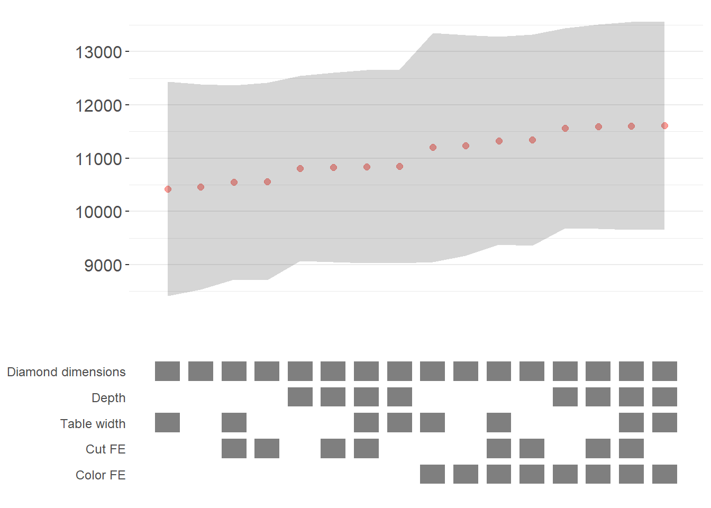
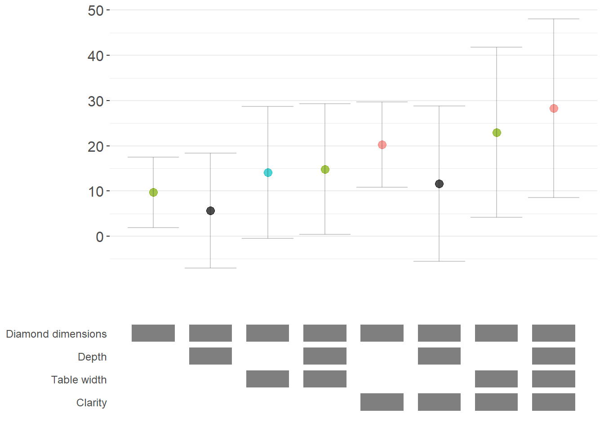
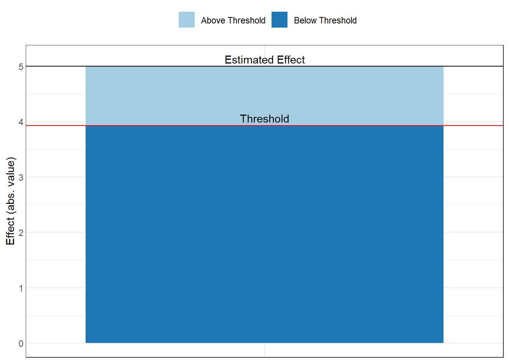
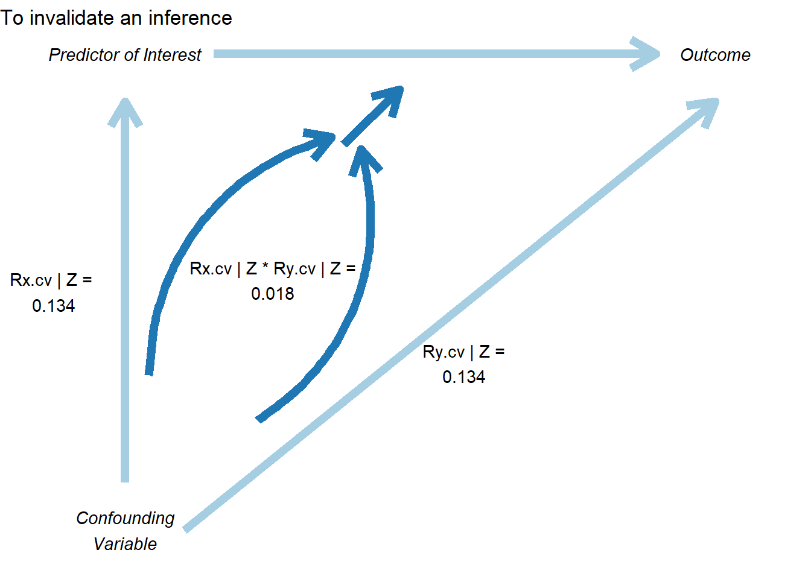
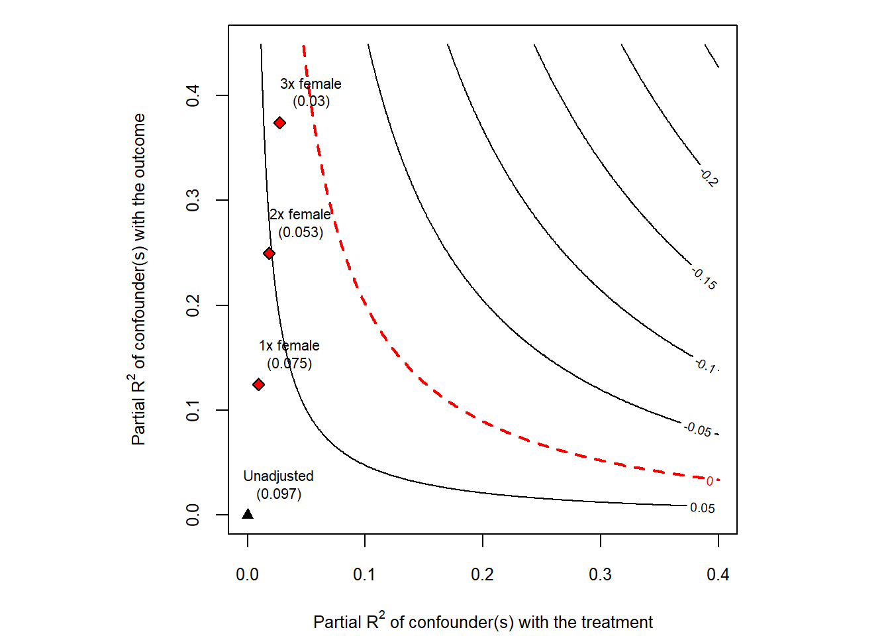
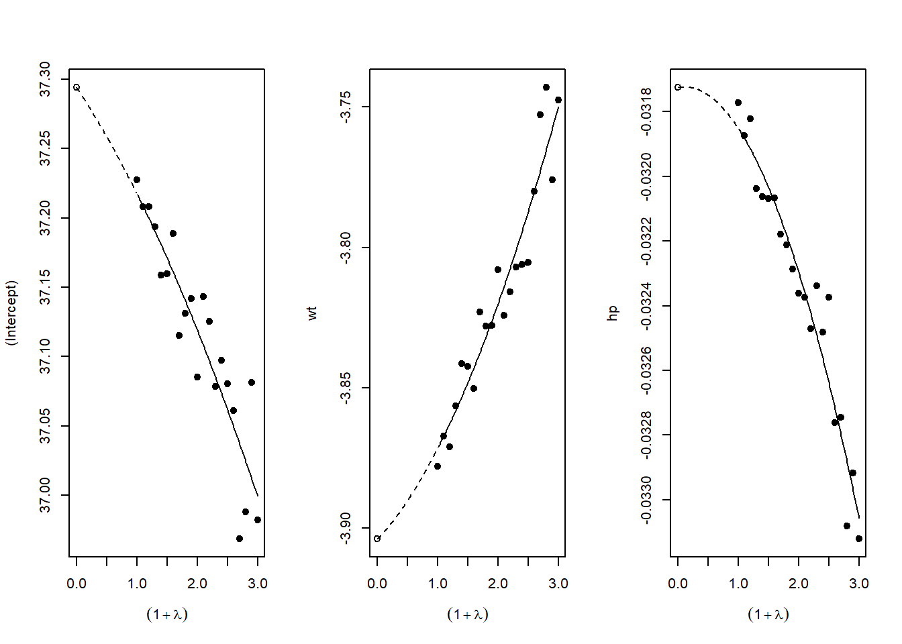

Chapter 54 Sensitivity Analysis and Robustness Checks
Abstract. A finding that survives only one specification is not a finding. This chapter organizes the robustness toolkit around the assumption each check interrogates, then works through the leading methods with runnable code. Specification curve and multiverse analysis come first, estimating a result across the full grid of defensible analytic choices rather than a hand-picked few, with implementations in starbility, specr, and rdfanalysis. Coefficient stability follows, developing the Oster approach that reads movement in a coefficient and in R-squared as observable evidence about the bias an unobserved confounder could produce. Formal omitted variable sensitivity analysis comes next, covering the konfound framework and the Cinelli and Hazlett robustness value with its contour plots, followed by Rosenbaum bounds for matched observational designs. Sensitivity to outliers and to measurement error close the technical material, and a section on reporting explains how to present these results so a reader can judge fragility without rerunning the analysis. Two extended sections cover placebo, falsification, and negative-control tests, and publication bias and p-hacking.
Keywords: Sensitivity analysis; Robustness checks; Specification curve; Multiverse analysis; Robustness value; Rosenbaum bounds
“Do robustness checks until you believe the result.”
— the author, having repeatedly experienced the brief joy of promising results only to watch them collapse under closer inspection, and now treating every finding as too good to be true until proven otherwise.
Sensitivity analysis and robustness checks are critical components of rigorous empirical research. They help researchers assess the stability of their findings across different model specifications, evaluate the potential impact of omitted variable bias, and provide evidence for or against causal interpretations. This chapter provides guidance on implementing various sensitivity analysis techniques, ranging from specification curve analysis to sophisticated methods for quantifying omitted variable bias.
54.1 The Philosophy of Robustness
Before diving into specific techniques, it’s worth understanding why robustness checks matter. In empirical research, we rarely have perfect certainty about the “correct” specification. Our choices about which controls to include, how to measure variables, which functional forms to use, and how to address endogeneity can all influence our results. Sensitivity analysis helps us understand whether our main conclusions depend critically on these choices, or whether they remain stable across reasonable alternatives.
A robust finding is one that persists across multiple plausible specifications. This doesn’t necessarily mean the coefficient estimate must be identical across all specifications, some variation is expected and often informative. Rather, robustness means that the key substantive conclusion (e.g., the sign, statistical significance, or economic magnitude of an effect) remains consistent despite reasonable variation in modeling choices.
54.1.1 A Map of Robustness Check Families
Robustness checks are not interchangeable: each family targets a distinct threat to a causal claim, and a persuasive paper draws at least one tool from each family that is relevant to its design. The table below organizes the landscape and points to where each family is treated in this book.
| Family | Threat addressed | Representative methods | Where treated |
|---|---|---|---|
| Unobserved-confounding sensitivity | Hidden bias remaining after adjustment for observables | Rosenbaum \(\Gamma\) bounds, Oster’s \(\delta\), Cinelli-Hazlett robustness value, ITCV, E-value (VanderWeele and Ding 2017) | This chapter (Rosenbaum bounds) |
| Partial identification | Point identification rests on unverifiable assumptions | Manski natural bounds, monotone instrumental variable bounds (Manski 1990; Manski and Pepper 2000) | Partial identification in DiD |
| Specification stability | Results hinge on discretionary modeling choices | Specification curve, multiverse analysis, coefficient stability | Specification curves and coefficient stability, this chapter |
| Sample restriction and influence | A few units, clusters, or outliers drive the estimate | Leave-one-out, cluster dropping, winsorizing, influence diagnostics | This chapter, and clustered inference in Chapter 58 |
| Measurement error sensitivity | Mismeasured treatment, outcome, or covariates | SIMEX, regression calibration, validation subsamples | This chapter |
| Design falsification | The design manufactures effects where none can exist | Placebo outcomes, negative controls, in-time and in-space placebos | Placebo and falsification tests |
| Literature-level distortion | The published evidence base is itself selected | Caliper tests, p-curve, p-value distribution tests | Publication bias and p-hacking |
| External validity | The effect may not transport to the target population | Reweighting to target populations, generalization frameworks | Generalization framework in the matching methods chapter (Chapter 44) |
A practical workflow that draws on this map: begin with design diagnostics (balance, pre-trends, placebos), quantify hidden-bias tolerance with at least one confounding-sensitivity statistic, display a specification curve for the headline outcome, report inference that is robust to the clustering and influence structure of the data, and close by stating how wide any partial-identification bounds are and whether the substantive conclusion survives them. The remainder of this chapter develops the families that concern a single study. The placebo and publication-bias chapters that follow take up design falsification and literature-level distortion.
54.2 Specification Curve Analysis
Specification curve analysis (also known as multiverse analysis or the specification robustness graph) provides a systematic way to examine how results vary across a large set of defensible specifications. Rather than reporting a single “preferred” specification, this approach acknowledges that multiple specifications may be equally justifiable and examines the distribution of estimates across all of them.
54.2.1 Conceptual Foundation
The specification curve approach was formalized by Simonsohn et al. (2020), though similar ideas have appeared under various names in the literature. The key insight is that researchers make many decisions when specifying a model: which controls to include, which fixed effects to add, how to cluster standard errors, etc. And these decisions can be viewed as creating a “multiverse” of possible specifications. By systematically varying these choices and examining the resulting distribution of estimates, we can assess whether our main conclusion depends on arbitrary specification choices. The authors’ own replication code, covering every figure and calculation in the paper and its supplement, is archived at osf.io/9rvps. The specr package used below is an independent, general-purpose implementation of the same method built by the same broader community, and is what we use for the worked examples that follow.
A specification curve typically consists of two panels:
- The coefficient panel: Shows the point estimate and confidence interval for the main variable of interest across all specifications, typically sorted by coefficient magnitude
- The specification panel: Shows which modeling choices were made in each specification (e.g., which controls were included, which fixed effects were used)
This visualization makes it easy to see whether results are driven by particular specification choices and whether the finding is robust across the specification space.
54.2.2 The starbility Package
The starbility package provides a flexible and user-friendly implementation of specification curve analysis. It works seamlessly with various model types and allows for sophisticated customization.
54.2.2.1 Installation and Setup
# Install from GitHub
# devtools::install_github('https://github.com/AakaashRao/starbility')
library(starbility)
# Load other required packages
library(tidyverse) # For data manipulation and visualization
library(lfe) # For fixed effects models
library(broom) # For tidying model output
library(cowplot) # For combining plots54.2.2.2 Basic Specification Curve with Multiple Controls
Let’s start with an example using the diamonds dataset. This example demonstrates how to systematically vary control variables and visualize the resulting specification curve.
library(tidyverse)
library(starbility)
library(lfe)
# Load and prepare data
data("diamonds")
set.seed(43) # For reproducibility
# Create a subset for computational efficiency
# In practice, you'd use your full dataset
indices = sample(1:nrow(diamonds),
replace = FALSE,
size = round(nrow(diamonds) / 20))
diamonds = diamonds[indices, ]
# Create additional variables for demonstration
diamonds$high_clarity = diamonds$clarity %in% c('VS1','VVS2','VVS1','IF')
diamonds$log_price = log(diamonds$price)
diamonds$log_carat = log(diamonds$carat)Now let’s define our specification universe. The key is to think carefully about which specification choices are defensible and should be explored:
# Base controls: These are included in ALL specifications
# Use this for controls that you believe should always be included based on theory
base_controls = c(
'Diamond dimensions' = 'x + y + z' # Physical dimensions
)
# Permutable controls: These will be included in all possible combinations
# These are controls where theory doesn't give clear guidance on inclusion
perm_controls = c(
'Depth' = 'depth',
'Table width' = 'table'
)
# Permutable fixed effects: Different types of fixed effects to explore
# Useful when you have multiple ways to control for unobserved heterogeneity
perm_fe_controls = c(
'Cut FE' = 'cut',
'Color FE' = 'color'
)
# Non-permutable fixed effects: Alternative specifications (only one included at a time)
# Use this when you have mutually exclusive ways of controlling for something
nonperm_fe_controls = c(
'Clarity FE (granular)' = 'clarity',
'Clarity FE (binary)' = 'high_clarity'
)
# If you want to explore instrumental variables specifications
instruments = 'x + y + z'
# Add sample weights for robustness
diamonds$sample_weights = runif(n = nrow(diamonds))54.2.2.3 Custom Model Functions
One of the most powerful features of starbility is the ability to use custom model functions. This allows you to implement your preferred estimation approach, including custom standard errors, specific inference procedures, or alternative confidence intervals.
# Custom function for felm models with robust standard errors
# This function must return a vector of: c(coefficient, p-value, upper CI, lower CI)
starb_felm_custom = function(spec, data, rhs, ...) {
# Convert specification string to formula
spec = as.formula(spec)
# Estimate the model using lfe::felm
# felm is particularly useful for models with multiple fixed effects
model = lfe::felm(spec, data = data) %>%
broom::tidy() # Convert to tidy format
# Extract results for the variable of interest (rhs)
row = which(model$term == rhs)
coef = model[row, 'estimate'] %>% as.numeric()
se = model[row, 'std.error'] %>% as.numeric()
p = model[row, 'p.value'] %>% as.numeric()
# Calculate confidence intervals
# Here we use 99% CI for more conservative inference
z = qnorm(0.995) # 99% confidence level
upper_ci = coef + z * se
lower_ci = coef - z * se
# For one-tailed tests, divide p-value by 2
# Remove this if you want two-tailed p-values
p_onetailed = p / 2
return(c(coef, p_onetailed, upper_ci, lower_ci))
}
# Alternative: Custom function with heteroskedasticity-robust SEs
starb_lm_robust = function(spec, data, rhs, ...) {
spec = as.formula(spec)
# Estimate with HC3 robust standard errors
model = lm(spec, data = data)
robust_se = sandwich::vcovHC(model, type = "HC3")
# Use lmtest for robust inference
coef_test = lmtest::coeftest(model, vcov = robust_se)
row = which(rownames(coef_test) == rhs)
coef = coef_test[row, 'Estimate']
se = coef_test[row, 'Std. Error']
p = coef_test[row, 'Pr(>|t|)']
z = qnorm(0.975) # 95% confidence level
return(c(coef, p, coef + z * se, coef - z * se))
}54.2.2.4 Creating the Specification Curve
Now we can generate our specification curve with all the bells and whistles (Figure 54.1)
# Generate specification curve
# This will create plots showing how the coefficient varies across specifications
plots = stability_plot(
data = diamonds,
lhs = 'price', # Dependent variable
rhs = 'carat', # Main independent variable of interest
model = starb_felm_custom, # Use our custom model function
# Clustering and weights
cluster = 'cut', # Cluster standard errors by cut
weights = 'sample_weights', # Use sample weights
# Control variable specifications
base = base_controls, # Always included
perm = perm_controls, # All combinations
perm_fe = perm_fe_controls, # All combinations of these FEs
# Alternative: Use non-permutable FE (only one at a time)
# nonperm_fe = nonperm_fe_controls,
# fe_always = FALSE, # Set to FALSE to include specs without any FEs
# Instrumental variables (if needed)
# iv = instruments,
# Sorting and display options
sort = "asc-by-fe", # Options: "asc", "desc", "asc-by-fe", "desc-by-fe"
# Visual customization
error_geom = 'ribbon', # Display error bands as ribbons (alternatives: 'linerange', 'none')
# error_alpha = 0.2, # Transparency of error bands
# point_size = 1.5, # Size of coefficient points
# control_text_size = 10, # Size of control labels
# For datasets with fewer specifications, you might want:
# control_geom = 'circle', # Use circles instead of rectangles
# point_size = 2,
# control_spacing = 0.3,
# Customize the y-axis range if needed
# coef_ylim = c(-5000, 35000),
# Adjust spacing between panels
# trip_top = 3,
# Relative height of coefficient panel vs control panel
rel_height = 0.6
)
Figure 54.1: Specification curve for the effect of carat on price.
The specification curve uses color coding to indicate statistical significance:
- Red: \(p < 0.01\) (highly significant)
- Green: \(p < 0.05\) (significant)
- Blue: \(p < 0.1\) (marginally significant)
- Black: \(p > 0.1\) (not significant)
This color scheme makes it easy to see at a glance whether your finding is robust across specifications, or whether significance depends on particular specification choices.
54.2.3 Advanced Specification Curve Techniques
54.2.3.1 Step-by-Step Control of the Process
For maximum flexibility, starbility allows you to control each step of the specification curve generation process. This is useful when you want to modify the grid of specifications, use custom model functions, or create highly customized visualizations.
# Ensure high_clarity variable exists
diamonds$high_clarity = diamonds$clarity %in% c('VS1','VVS2','VVS1','IF')
# Redefine controls for this example
base_controls = c(
'Diamond dimensions' = 'x + y + z'
)
perm_controls = c(
'Depth' = 'depth',
'Table width' = 'table'
)
perm_fe_controls = c(
'Cut FE' = 'cut',
'Color FE' = 'color'
)
nonperm_fe_controls = c(
'Clarity FE (granular)' = 'clarity',
'Clarity FE (binary)' = 'high_clarity'
)
# Step 1: Create the control grid
# This generates all possible combinations of controls
grid1 = stability_plot(
data = diamonds,
lhs = 'price',
rhs = 'carat',
perm = perm_controls,
base = base_controls,
perm_fe = perm_fe_controls,
nonperm_fe = nonperm_fe_controls,
run_to = 2 # Stop after creating the grid
)
# Examine the grid structure
head(grid1, 10)
#> Diamond dimensions Depth Table width Cut FE Color FE np_fe
#> 1 1 0 0 0 0
#> 2 1 1 0 0 0
#> 3 1 0 1 0 0
#> 4 1 1 1 0 0
#> 5 1 0 0 1 0
#> 6 1 1 0 1 0
#> 7 1 0 1 1 0
#> 8 1 1 1 1 0
#> 9 1 0 0 0 1
#> 10 1 1 0 0 1
# Each row represents a different specification
# Columns indicate which controls/FEs are included (1 = yes, 0 = no)
# Step 2: Generate model expressions
# This creates the actual formula for each specification
grid2 = stability_plot(
grid = grid1, # Use the grid from step 1
data = diamonds,
lhs = 'price',
rhs = 'carat',
perm = perm_controls,
base = base_controls,
run_from = 2, # Start from step 2
run_to = 3 # Stop after generating expressions
)
# View the formulas
head(grid2, 10)
#> Diamond dimensions Depth Table width np_fe
#> 1 1 0 0 0
#> 2 1 1 0 0
#> 3 1 0 1 0
#> 4 1 1 1 0
#> 5 1 0 0 0
#> 6 1 1 0 0
#> 7 1 0 1 0
#> 8 1 1 1 0
#> 9 1 0 0 0
#> 10 1 1 0 0
#> expr
#> 1 price~carat+x+y+z|0|0|0
#> 2 price~carat+x+y+z+depth|0|0|0
#> 3 price~carat+x+y+z+table|0|0|0
#> 4 price~carat+x+y+z+depth+table|0|0|0
#> 5 price~carat+x+y+z|0|0|0
#> 6 price~carat+x+y+z+depth|0|0|0
#> 7 price~carat+x+y+z+table|0|0|0
#> 8 price~carat+x+y+z+depth+table|0|0|0
#> 9 price~carat+x+y+z|0|0|0
#> 10 price~carat+x+y+z+depth|0|0|0
# Now each row has an 'expr' column with the full model formula
# Step 3: Estimate all models
# This runs the actual regressions
grid3 = stability_plot(
grid = grid2,
data = diamonds,
lhs = 'price',
rhs = 'carat',
perm = perm_controls,
base = base_controls,
run_from = 3,
run_to = 4
)
# View estimation results
head(grid3, 10)
#> Diamond dimensions Depth Table width np_fe
#> 1 1 0 0 0
#> 2 1 1 0 0
#> 3 1 0 1 0
#> 4 1 1 1 0
#> 5 1 0 0 0
#> 6 1 1 0 0
#> 7 1 0 1 0
#> 8 1 1 1 0
#> 9 1 0 0 0
#> 10 1 1 0 0
#> expr coef p error_high error_low
#> 1 price~carat+x+y+z|0|0|0 10461.86 p<0.01 11031.84 9891.876
#> 2 price~carat+x+y+z+depth|0|0|0 10808.25 p<0.01 11388.81 10227.683
#> 3 price~carat+x+y+z+table|0|0|0 10423.42 p<0.01 10992.00 9854.849
#> 4 price~carat+x+y+z+depth+table|0|0|0 10851.31 p<0.01 11428.58 10274.037
#> 5 price~carat+x+y+z|0|0|0 10461.86 p<0.01 11031.84 9891.876
#> 6 price~carat+x+y+z+depth|0|0|0 10808.25 p<0.01 11388.81 10227.683
#> 7 price~carat+x+y+z+table|0|0|0 10423.42 p<0.01 10992.00 9854.849
#> 8 price~carat+x+y+z+depth+table|0|0|0 10851.31 p<0.01 11428.58 10274.037
#> 9 price~carat+x+y+z|0|0|0 10461.86 p<0.01 11031.84 9891.876
#> 10 price~carat+x+y+z+depth|0|0|0 10808.25 p<0.01 11388.81 10227.683
# Now includes coefficient estimates, p-values, and confidence intervals
# Step 4: Prepare data for plotting
# This creates the two dataframes needed for visualization
dfs = stability_plot(
grid = grid3,
data = diamonds,
lhs = 'price',
rhs = 'carat',
perm = perm_controls,
base = base_controls,
run_from = 4,
run_to = 5
)
coef_grid = dfs[[1]] # Data for coefficient panel
control_grid = dfs[[2]] # Data for control specification panel
head(coef_grid, 10)
#> Diamond dimensions Depth Table width np_fe
#> 1 1 0 0 0
#> 2 1 1 0 0
#> 3 1 0 1 0
#> 4 1 1 1 0
#> 5 1 0 0 0
#> 6 1 1 0 0
#> 7 1 0 1 0
#> 8 1 1 1 0
#> 9 1 0 0 0
#> 10 1 1 0 0
#> expr coef p error_high error_low
#> 1 price~carat+x+y+z|0|0|0 10461.86 p<0.01 11031.84 9891.876
#> 2 price~carat+x+y+z+depth|0|0|0 10808.25 p<0.01 11388.81 10227.683
#> 3 price~carat+x+y+z+table|0|0|0 10423.42 p<0.01 10992.00 9854.849
#> 4 price~carat+x+y+z+depth+table|0|0|0 10851.31 p<0.01 11428.58 10274.037
#> 5 price~carat+x+y+z|0|0|0 10461.86 p<0.01 11031.84 9891.876
#> 6 price~carat+x+y+z+depth|0|0|0 10808.25 p<0.01 11388.81 10227.683
#> 7 price~carat+x+y+z+table|0|0|0 10423.42 p<0.01 10992.00 9854.849
#> 8 price~carat+x+y+z+depth+table|0|0|0 10851.31 p<0.01 11428.58 10274.037
#> 9 price~carat+x+y+z|0|0|0 10461.86 p<0.01 11031.84 9891.876
#> 10 price~carat+x+y+z+depth|0|0|0 10808.25 p<0.01 11388.81 10227.683
#> model
#> 1 1
#> 2 2
#> 3 3
#> 4 4
#> 5 5
#> 6 6
#> 7 7
#> 8 8
#> 9 9
#> 10 10
# Step 5: Create the plot panels
# This generates the two ggplot objects
panels = stability_plot(
data = diamonds,
lhs = 'price',
rhs = 'carat',
coef_grid = coef_grid,
control_grid = control_grid,
run_from = 5,
run_to = 6
)
# Step 6: Combine and display
# Final step to create the complete visualization
final_plot = stability_plot(
data = diamonds,
lhs = 'price',
rhs = 'carat',
coef_panel = panels[[1]],
control_panel = panels[[2]],
run_from = 6,
run_to = 7
)54.2.3.2 Specification Curves for Non-Linear Models
Specification curve analysis is not limited to linear models. Here’s how to implement it with logistic regression (Figure 54.2).
# Create binary outcome variable
diamonds$above_med_price = as.numeric(diamonds$price > median(diamonds$price))
# Add sample weights for logit model
diamonds$weight = runif(nrow(diamonds))
# Define controls
base_controls = c('Diamond dimensions' = 'x + y + z')
perm_controls = c(
'Depth' = 'depth',
'Table width' = 'table',
'Clarity' = 'clarity'
)
lhs_var = 'above_med_price'
rhs_var = 'carat'
# Step 1: Create initial grid
grid1 = stability_plot(
data = diamonds,
lhs = lhs_var,
rhs = rhs_var,
perm = perm_controls,
base = base_controls,
fe_always = FALSE, # Include specifications without FEs
run_to = 2
)
# Step 2: Manually create formulas for logit model
# The starbility package creates expressions for lm/felm by default
# For glm, we need to create our own formula structure
base_perm = c(base_controls, perm_controls)
# Create control part of formula
grid1$expr = apply(
grid1[, 1:length(base_perm)],
1,
function(x) {
paste(
base_perm[names(base_perm)[which(x == 1)]],
collapse = '+'
)
}
)
# Complete formula with LHS and RHS variables
grid1$expr = paste(lhs_var, '~', rhs_var, '+', grid1$expr, sep = '')
head(grid1, 10)
#> Diamond dimensions Depth Table width Clarity np_fe
#> 1 1 0 0 0
#> 2 1 1 0 0
#> 3 1 0 1 0
#> 4 1 1 1 0
#> 5 1 0 0 1
#> 6 1 1 0 1
#> 7 1 0 1 1
#> 8 1 1 1 1
#> expr
#> 1 above_med_price~carat+x + y + z
#> 2 above_med_price~carat+x + y + z+depth
#> 3 above_med_price~carat+x + y + z+table
#> 4 above_med_price~carat+x + y + z+depth+table
#> 5 above_med_price~carat+x + y + z+clarity
#> 6 above_med_price~carat+x + y + z+depth+clarity
#> 7 above_med_price~carat+x + y + z+table+clarity
#> 8 above_med_price~carat+x + y + z+depth+table+clarity
# Step 3: Create custom logit estimation function
# This function estimates a logistic regression and extracts results
starb_logit = function(spec, data, rhs, ...) {
spec = as.formula(spec)
# Estimate logit model with weights, suppressing separation warning
model = suppressWarnings(
glm(
spec,
data = data,
family = 'binomial',
weights = data$weight
)
) %>%
broom::tidy()
# Extract coefficient for variable of interest
row = which(model$term == rhs)
coef = model[row, 'estimate'] %>% as.numeric()
se = model[row, 'std.error'] %>% as.numeric()
p = model[row, 'p.value'] %>% as.numeric()
# Return coefficient, p-value, and 95% CI bounds
return(c(coef, p, coef + 1.96*se, coef - 1.96*se))
}
# Generate specification curve for logit model
logit_curve = stability_plot(
grid = grid1,
data = diamonds,
lhs = lhs_var,
rhs = rhs_var,
model = starb_logit, # Use our custom logit function
perm = perm_controls,
base = base_controls,
fe_always = FALSE,
run_from = 3 # Start from estimation step
)
Figure 54.2: Specification curve (logit specifications).
54.2.3.3 Marginal Effects for Non-Linear Models
For non-linear models like logit or probit, we often want to report marginal effects (average marginal effects, AME) rather than raw coefficients, as they’re more interpretable. Here’s how to incorporate marginal effects into specification curves (Figure 54.3).
library(margins) # For calculating marginal effects
# Enhanced logit function with marginal effects option
starb_logit_enhanced = function(spec, data, rhs, ...) {
# Extract additional arguments
l = list(...)
get_mfx = ifelse(is.null(l$get_mfx), FALSE, TRUE) # Default to FALSE
spec = as.formula(spec)
if (get_mfx) {
# Calculate average marginal effects
model = suppressWarnings(
glm(
spec,
data = data,
family = 'binomial',
weights = data$weight
)
) %>%
margins() %>% # Calculate marginal effects
summary()
# Extract AME results
row = which(model$factor == rhs)
coef = model[row, 'AME'] %>% as.numeric() # Average Marginal Effect
se = model[row, 'SE'] %>% as.numeric()
p = model[row, 'p'] %>% as.numeric()
} else {
# Return raw coefficients (log-odds)
model = suppressWarnings(
glm(
spec,
data = data,
family = 'binomial',
weights = data$weight
)
) %>%
broom::tidy()
row = which(model$term == rhs)
coef = model[row, 'estimate'] %>% as.numeric()
se = model[row, 'std.error'] %>% as.numeric()
p = model[row, 'p.value'] %>% as.numeric()
}
# Use 99% confidence intervals for more conservative inference
z = qnorm(0.995)
return(c(coef, p, coef + z*se, coef - z*se))
}
# Generate specification curve with marginal effects
ame_curve = stability_plot(
grid = grid1,
data = diamonds,
lhs = lhs_var,
rhs = rhs_var,
model = starb_logit_enhanced,
get_mfx = TRUE, # Request marginal effects
perm = perm_controls,
base = base_controls,
fe_always = FALSE,
run_from = 3
)![Specification curve displaying average marginal effects of diamond characteristics including depth, table width, and clarity on diamond price across different model specifications. Points represent marginal effect estimates with error bars indicating confidence intervals. Different colors distinguish between different levels or interactions of the variables. The y-axis shows marginal effect values ranging from approximately negative 0.5 to 1.5, while the x-axis displays different combinations of diamond dimension variables tested across specifications.](42-sensitivity-robustness_files/figure-html/robustness-ame-curve-1.png)
Figure 54.3: Robustness of diamond-dimension effects measured as average marginal effects.
54.2.3.4 Fully Customized Specification Curve Visualizations
When you need complete control over the appearance of your specification curve, you can extract the underlying data and create custom ggplot visualizations (Figure 54.4).
# Extract data for custom plotting
dfs = stability_plot(
grid = grid1,
data = diamonds,
lhs = lhs_var,
rhs = rhs_var,
model = starb_logit_enhanced,
get_mfx = TRUE,
perm = perm_controls,
base = base_controls,
fe_always = FALSE,
run_from = 3,
run_to = 5 # Stop before plotting
)
coef_grid_logit = dfs[[1]]
control_grid_logit = dfs[[2]]
# Define plot parameters
min_space = 0.5 # Space at edges of plot
# Create highly customized coefficient plot
coef_plot = ggplot2::ggplot(
coef_grid_logit,
aes(
x = model,
y = coef,
shape = p,
group = p
)
) +
# Add confidence interval ribbons
geom_linerange(
aes(ymin = error_low, ymax = error_high),
alpha = 0.75,
size = 0.8
) +
# Add coefficient points with color and shape by significance
geom_point(
size = 5,
aes(col = p, fill = p),
alpha = 1
) +
# Use viridis color palette (colorblind-friendly)
viridis::scale_color_viridis(
discrete = TRUE,
option = "D",
name = "P-value"
) +
# Different shapes for different significance levels
scale_shape_manual(
values = c(15, 17, 18, 19),
name = "P-value"
) +
# Reference line at zero
geom_hline(
yintercept = 0,
linetype = 'dotted',
color = 'red',
size = 0.5
) +
# Styling
theme_classic() +
theme(
axis.text.x = element_blank(),
axis.title = element_blank(),
axis.ticks.x = element_blank(),
plot.title = element_text(size = 14, face = "bold"),
plot.subtitle = element_text(size = 11)
) +
# Set axis limits
coord_cartesian(
xlim = c(1 - min_space, max(coef_grid_logit$model) + min_space),
ylim = c(-0.1, 1.6)
) +
# Remove redundant legends
guides(fill = FALSE, shape = FALSE, col = FALSE) +
# Add titles
ggtitle('Specification Curve: Effect of Carat on Above-Median Price') +
labs(subtitle = "Error bars represent 99% confidence intervals for average marginal effects")
# Create customized control specification plot
control_plot = ggplot(control_grid_logit) +
# Use diamond shapes for controls
geom_point(
aes(x = model, y = y, fill = value),
shape = 23, # Diamond shape
size = 4
) +
# Black for included, white for excluded
scale_fill_manual(values = c('#FFFFFF', '#000000')) +
guides(fill = FALSE) +
# Custom y-axis labels showing control names
scale_y_continuous(
breaks = unique(control_grid_logit$y),
labels = unique(control_grid_logit$key),
limits = c(
min(control_grid_logit$y) - 1,
max(control_grid_logit$y) + 1
)
) +
# X-axis shows specification number
scale_x_continuous(
breaks = c(1:max(control_grid_logit$model))
) +
coord_cartesian(
xlim = c(1 - min_space, max(control_grid_logit$model) + min_space)
) +
# Minimal theme for control panel
theme_classic() +
theme(
panel.grid.major.y = element_blank(),
panel.grid.minor.y = element_blank(),
axis.title = element_blank(),
axis.text.y = element_text(size = 10),
axis.ticks = element_blank(),
axis.line = element_blank()
)
# Combine plots vertically
cowplot::plot_grid(
coef_plot,
control_plot,
rel_heights = c(1, 0.5), # Coefficient plot gets more space
align = 'v',
ncol = 1,
axis = 'b' # Align bottom axes
)![Specification curve displaying the effect of diamond carat weight on the probability of being priced above the median across eight different model specifications. The top panel shows average marginal effect estimates represented by different colored shapes including triangles, diamonds, circles, and squares, with error bars indicating confidence intervals. The y-axis ranges from 0 to 1.5, with a dotted horizontal line at zero. The bottom panel uses a matrix of filled and unfilled diamonds to indicate which control variables including diamond dimensions, depth, table width, and clarity are included in each of the eight specifications numbered along the x-axis.](42-sensitivity-robustness_files/figure-html/fully-customized-spec-curve-1.png)
Figure 54.4: Specification curve for the effect of carat on above-median diamond price.
54.2.3.5 Comparing Multiple Model Types
A powerful extension is to compare results across different model types (e.g., logit vs. probit) in the same specification curve (Figure 54.5). This helps assess whether your findings are specific to a particular functional form assumption:
# Create custom probit estimation function
starb_probit = function(spec, data, rhs, ...) {
# Extract additional arguments
l = list(...)
get_mfx = ifelse(is.null(l$get_mfx), FALSE, TRUE)
spec = as.formula(spec)
if (get_mfx) {
# Calculate average marginal effects for probit
model = suppressWarnings(
glm(
spec,
data = data,
family = binomial(link = 'probit'), # Probit link
weights = data$weight
)
) %>%
margins() %>%
summary()
row = which(model$factor == rhs)
coef = model[row, 'AME'] %>% as.numeric()
se = model[row, 'SE'] %>% as.numeric()
p = model[row, 'p'] %>% as.numeric()
} else {
# Return raw probit coefficients
model = suppressWarnings(
glm(
spec,
data = data,
family = binomial(link = 'probit'),
weights = data$weight
)
) %>%
broom::tidy()
row = which(model$term == rhs)
coef = model[row, 'estimate'] %>% as.numeric()
se = model[row, 'std.error'] %>% as.numeric()
p = model[row, 'p.value'] %>% as.numeric()
}
# 99% confidence intervals
z = qnorm(0.995)
return(c(coef, p, coef + z * se, coef - z * se))
}
# Generate probit specification curve
probit_dfs = stability_plot(
grid = grid1,
data = diamonds,
lhs = lhs_var,
rhs = rhs_var,
model = starb_probit,
get_mfx = TRUE,
perm = perm_controls,
base = base_controls,
fe_always = FALSE,
run_from = 3,
run_to = 5
)
# Adjust model numbers for probit to plot side-by-side with logit
coef_grid_probit = probit_dfs[[1]] %>%
mutate(model = model + max(coef_grid_logit$model))
control_grid_probit = probit_dfs[[2]] %>%
mutate(model = model + max(control_grid_logit$model))
# Combine logit and probit results
coef_grid_combined = bind_rows(coef_grid_logit, coef_grid_probit)
control_grid_combined = bind_rows(control_grid_logit, control_grid_probit)
# Generate combined plots
panels = stability_plot(
coef_grid = coef_grid_combined,
control_grid = control_grid_combined,
data = diamonds,
lhs = lhs_var,
rhs = rhs_var,
perm = perm_controls,
base = base_controls,
fe_always = FALSE,
run_from = 5,
run_to = 6
)
# Add annotations to distinguish model types
coef_plot_combined = panels[[1]] +
# Vertical line separating logit and probit
geom_vline(
xintercept = max(coef_grid_logit$model) + 0.5,
linetype = 'dashed',
alpha = 0.8,
size = 1
) +
# Label for logit models
annotate(
geom = 'label',
x = max(coef_grid_logit$model) / 2,
y = 1.8,
label = 'Logit models',
size = 6,
fill = '#D3D3D3',
alpha = 0.7
) +
# Label for probit models
annotate(
geom = 'label',
x = max(coef_grid_logit$model) + max(coef_grid_probit$model) / 2,
y = 1.8,
label = 'Probit models',
size = 6,
fill = '#D3D3D3',
alpha = 0.7
) +
coord_cartesian(ylim = c(-0.5, 1.9))
control_plot_combined = panels[[2]] +
geom_vline(
xintercept = max(control_grid_logit$model) + 0.5,
linetype = 'dashed',
alpha = 0.8,
size = 1
)# Display combined plot
cowplot::plot_grid(
coef_plot_combined,
control_plot_combined,
rel_heights = c(1, 0.5),
align = 'v',
ncol = 1,
axis = 'b'
)![Side-by-side specification curves comparing average marginal effects from logit models on the left and probit models on the right, separated by a vertical dashed line. Both panels show the effects of diamond characteristics including depth, table width, and clarity on diamond price across multiple model specifications. Points represent marginal effect estimates with error bars indicating confidence intervals, with different colors distinguishing between variable levels or interactions. The y-axis shows marginal effect values ranging from approximately negative 0.5 to 2.0, while the x-axis displays different combinations of diamond dimension variables. The bottom portion uses gray boxes to indicate which control variables are included in each specification for both model types.](42-sensitivity-robustness_files/figure-html/robustness-cowplot-plotgrid-1.png)
Figure 54.5: Comparison of average marginal effects across logit and probit model specifications.
54.2.4 The specr Package
The specr package provides an alternative implementation of specification curve analysis that focuses on concise specifications of the model space. Instead of defining a custom estimation function, the analyst specifies the sets of possible outcomes, focal predictors, controls, and sample restrictions. The package then enumerates all admissible specifications, estimates them, and offers summary and plotting methods.
In contrast to starbility, which is designed around user-supplied estimation functions and highly customized plotting, specr aims for a compact workflow that covers a broad range of standard models.
54.2.4.1 Preparing the Diamonds Example
To keep the exposition comparable to the starbility example, the same diamonds data are used. A subsample is created for speed, and log transformed variables are added to illustrate how specr can handle multiple outcomes and focal predictors.
library(tidyverse)
library(specr)
# Load data
data("diamonds", package = "ggplot2")
set.seed(43)
# Subsample for computational convenience
indices = sample(
x = seq_len(nrow(diamonds)),
size = round(nrow(diamonds) / 20),
replace = FALSE
)
diamonds_specr = diamonds[indices, ] |>
mutate(
high_clarity = clarity %in% c("VS1", "VVS2", "VVS1", "IF"),
log_price = log(price),
log_carat = log(carat)
)The key idea is now to describe the specification universe in terms of:
- possible outcome variables,
- possible focal predictors,
- a set of optional controls that may or may not enter the model, and
- optional sample restrictions.
specr will then traverse this design and estimate all corresponding models.
54.2.4.2 Defining and Running the Specification Curve
The central function in the package is typically called via
where
yis a vector of outcome variable names,xis a vector of focal predictor names,modelspecifies the estimation method (for example"lm"for linear regression),controlsis a vector of candidate control variables, andsubsetsis an optional list that encodes sample restrictions.
The example below sets up a relatively rich specification universe:
- outcomes: either
priceorlog_price, - focal predictor: either
caratorlog_carat, - controls: any subset of seven potential covariates.
This already yields a sizable number of specifications and illustrates how quickly the design space expands.
specs_diamonds <- specr::setup(
data = diamonds_specr,
y = c("price", "log_price"),
x = c("carat", "log_carat"),
model = "lm",
controls = c("x", "y", "z", "cut", "color")
) |>
specr::specr()
# Inspect the resulting object
summary(specs_diamonds)
#> Results of the specification curve analysis
#> -------------------
#> Technical details:
#>
#> Class: specr.object -- version: 1.0.0
#> Cores used: 1
#> Duration of fitting process: 2.81 sec elapsed
#> Number of specifications: 128
#>
#> Descriptive summary of the specification curve:
#>
#> median mad min max q25 q75
#> 1.49 171.55 -15162.63 11362.39 -0.91 6432.23
#>
#> Descriptive summary of sample sizes:
#>
#> median min max
#> 2697 2697 2697
#>
#> Head of the specification results (first 6 rows):
#>
#> # A tibble: 6 × 24
#> x y model controls subsets formula estimate std.error statistic
#> <chr> <chr> <chr> <chr> <chr> <glue> <dbl> <dbl> <dbl>
#> 1 carat price lm no covariates all price ~ … 7710. 62.3 124.
#> 2 carat price lm x all price ~ … 10340. 286. 36.2
#> 3 carat price lm y all price ~ … 9815. 282. 34.8
#> 4 carat price lm z all price ~ … 9345. 230. 40.6
#> 5 carat price lm cut all price ~ … 7816. 62.7 125.
#> 6 carat price lm color all price ~ … 8018. 63.2 127.
#> # ℹ 15 more variables: p.value <dbl>, conf.low <dbl>, conf.high <dbl>,
#> # fit_r.squared <dbl>, fit_adj.r.squared <dbl>, fit_sigma <dbl>,
#> # fit_statistic <dbl>, fit_p.value <dbl>, fit_df <dbl>, fit_logLik <dbl>,
#> # fit_AIC <dbl>, fit_BIC <dbl>, fit_deviance <dbl>, fit_df.residual <dbl>,
#> # fit_nobs <dbl>The specs_diamonds object stores one row per estimated specification, including the estimated coefficient for the focal predictor, its standard error, confidence interval, and associated \(p\) value, plus a record of which modeling choices generated that estimate.
54.2.4.3 Visualizing the Specification Curve
specr provides a plot method that produces a specification curve directly from the results object. The exact appearance depends on the package version and plotting options, but the default is typically a curve where each point corresponds to one specification, the vertical axis shows the estimated coefficient, and uncertainty intervals are plotted around each point (Figure 54.6).
![Two-panel specification curve showing the robustness of diamond price effect estimates across different model specifications. Panel A displays coefficient estimates on the y-axis ranging from negative 10000 to positive 10000, plotted against specification number on the x-axis from 0 to approximately 120. Points are colored red for negative estimates, gray for near-zero estimates, and blue for positive estimates. Panel B shows the analytical choices made for each specification, including the dependent variable transformations at the top (log carat, log price, and linear model indicated by vertical lines), and control variables in the middle section showing various combinations of x, y, z variables with cut, clarity, and color controls. The bottom row indicates whether all controls were included. Red and blue vertical lines in Panel B correspond to the red and blue estimates in Panel A, showing which analytical choices produced negative versus positive results.](42-sensitivity-robustness_files/figure-html/diamonds-specr-specification-curve-1.png)
Figure 54.6: Specification-curve analysis of diamond price effects across model choices.
In this visualization (Figure 54.6), the user can typically read off:
- the range of estimates across all admissible specifications,
- how often the effect is statistically significant (for example, \(p < 0.05\)),
- whether sign changes occur as controls are added or removed, and
- how sensitive the effect size is to modeling choices.
Additional plotting options in specr generally allow the user to:
- show separate panels for different outcomes or focal predictors,
- display heatmaps of significance patterns,
- or summarize the distribution of coefficients.
The exact arguments are version dependent, so it is good practice to consult ?plot for the specr object to see the current capabilities and defaults.
54.2.4.4 Relation to the starbility Workflow
Both starbility and specr implement the same methodological idea: documenting the full set of defensible specifications and showing how the estimated effect of interest behaves across that universe.
From a practical perspective:
specris convenient when:- the relevant models are standard (for example linear regression, generalized linear models),
- the specification universe is naturally described in terms of outcome, focal predictor, controls, and simple subsets, and
- a concise, high level interface is preferred.
starbilityis preferable when:- fully custom estimation routines are needed,
- specialist estimators or complex clustering and weighting schemes are central to the analysis,
- or the user wants complete control over how coefficients, \(p\) values, and confidence intervals are computed.
In empirical work, it is entirely reasonable to begin with specr to get a quick overview of robustness patterns, then move to starbility when the analysis requires more specialized modeling choices than specr natively supports.
54.2.5 The rdfanalysis Package
While starbility is recommended for most applications, the rdfanalysis package by Joachim Gassen offers an alternative implementation with some unique features, particularly for research that follows a researcher degrees of freedom (RDF) framework.
54.2.5.1 Installation and Basic Usage
The rdfanalysis package focuses on documenting and visualizing researcher degrees of freedom throughout the research process (Figure 54.7), from data collection to model specification:
library(rdfanalysis)
# Load example estimates from the package documentation
load(url("https://joachim-gassen.github.io/data/rdf_ests.RData"))# Generate specification curve
# The package expects a dataframe with estimates and confidence bounds
plot_rdf_spec_curve(
ests, # Dataframe with estimates
"est", # Column name for point estimates
"lb", # Column name for lower confidence bound
"ub" # Column name for upper confidence bound
)![Two-panel specification curve displaying results from a multiverse analysis across thousands of analytical protocols. The top panel shows effect estimates on the y-axis ranging from approximately negative 0.25 to 0.75, plotted against protocol number on the x-axis from 0 to over 12000. Individual estimates are shown as gray points with a smoothed trend line transitioning from red (negative) through black (zero) to blue (positive). The bottom panel shows the analytical choices made for each protocol using horizontal colored lines and dots. Y-axis labels indicate various methodological choices including missing data handling (na.omit with yes or no), variable transformations (idv and dv options), outlier treatment methods, model types (including lmer and various cutoff options), random effects specifications, and clustering approaches (cluster county and cluster city-year). The dense patterns of colored lines and dots show which combinations of analytical choices were used across the many protocols tested.](42-sensitivity-robustness_files/figure-html/robustness-rdf-spec-curve-1.png)
Figure 54.7: Specification curve from a multiverse analysis across analytical protocols.
This level of transparency is particularly valuable for addressing concerns about p-hacking and researcher degrees of freedom.
54.3 Coefficient Stability
Beyond specification curve analysis, another crucial aspect of sensitivity analysis is assessing whether your estimates are robust to potential omitted variable bias (Altonji et al. 2005). Even with comprehensive controls, unobserved confounders may threaten causal inference.
54.3.1 Theoretical Foundation: The Oster (2019) Approach
Oster’s (2019) influential paper provides a formal framework for assessing omitted variable bias. The key insight is that coefficient stability alone is insufficient, we need to consider both coefficient stability and \(R^2\) movement to evaluate the likely impact of unobservables.
The intuition is as follows:
- Coefficient stability: How much does the coefficient on your treatment variable change when you add controls?
- \(R^2\) movement: How much does the model’s explanatory power increase when you add controls?
If adding observed controls moves the \(R^2\) substantially but barely affects the coefficient, this suggests that unobservables (which might also affect \(R^2\)) are unlikely to overturn your result. Conversely, if the coefficient is very sensitive to the controls you add, unobservables might also have large effects.
Oster formalizes this by computing a parameter \(\delta\) (delta), which represents how strong the relationship between unobservables and the outcome would need to be (relative to the observables) to explain away the entire treatment effect. Higher values of \(\delta\) suggest more robust results.
The formula for calculating the bias-adjusted treatment effect is:
\[ \beta^* = \tilde{\beta} - \delta \times [\dot{\beta} - \tilde{\beta}] \times \frac{R_{max} - \tilde{R}^2}{\tilde{R}^2 - \dot{R}^2} \]
Where:
- \(\beta^*\) = bias-adjusted treatment effect
- \(\dot{\beta}\) = coefficient from short regression (without controls)
- \(\tilde{\beta}\) = coefficient from full regression (with controls)
- \(\dot{R}^2\) = \(R^2\) from short regression
- \(\tilde{R}^2\) = \(R^2\) from full regression
- \(R_{max}\) = hypothetical maximum \(R^2\) (often set to 1 or a realistic upper bound)
- \(\delta\) = proportional selection on unobservables (assumed relationship)
54.3.2 The robomit Package
The robomit package provides a straightforward implementation of Oster’s method:
library(robomit)
# Calculate bias-adjusted treatment effect using Oster's method
# This function estimates beta* under different assumptions about delta
o_beta_results = o_beta(
y = "mpg", # Dependent variable
x = "wt", # Treatment variable of interest
con = "hp + qsec", # Control variables (covariates)
delta = 1, # Proportional selection assumption
# delta = 1 means unobservables are as important as observables
# delta = 0 means no omitted variable bias
# delta > 1 means unobservables are more important than observables
R2max = 0.9, # Maximum R-squared achievable
# Common choices: 1.0 (theoretical max),
# 1.3*R2_full (30% improvement over full model),
# or domain-specific reasonable maximum
type = "lm", # Model type: "lm" for OLS, "logit" for logistic
data = mtcars # Dataset
)The function returns:
Coefficient from short model (without controls)
Coefficient from full model (with controls)
Bias-adjusted coefficient under delta and \(R^2\) max assumptions
The value of delta needed to drive the coefficient to zero
print(o_beta_results)
#> # A tibble: 10 × 2
#> Name Value
#> <chr> <dbl>
#> 1 beta* -2.00
#> 2 (beta*-beta controlled)^2 5.56
#> 3 Alternative Solution 1 -7.01
#> 4 (beta[AS1]-beta controlled)^2 7.05
#> 5 Uncontrolled Coefficient -5.34
#> 6 Controlled Coefficient -4.36
#> 7 Uncontrolled R-square 0.753
#> 8 Controlled R-square 0.835
#> 9 Max R-square 0.9
#> 10 delta 1Interpretation:
If bias-adjusted beta is still large and significant, this suggests robustness to omitted variable bias
If the delta needed to explain away the effect is large (>1), this suggests you’d need very strong unobservables to overturn the result
For a more comprehensive analysis, you can explore coefficient stability across a range of delta values:
# Create a sequence of delta values to explore
delta_values = seq(0, 2, by = 0.1)
beta_results = sapply(delta_values, function(d) {
result = suppressWarnings(
o_beta(
y = "mpg",
x = "wt",
con = "hp + qsec",
delta = d,
R2max = 0.9,
type = "lm",
data = mtcars
)
)
# Extract beta* (first row)
result$Value[result$Name == "beta*"]
})
# Create visualization
stability_df = data.frame(
delta = delta_values,
beta_adjusted = beta_results
)Interpretation guidelines:
\(|\delta| < 1\): Unobservables would need to be less related to treatment/outcome than observables to overturn the result (less robust)
\(|\delta| \approx 1\): Unobservables would need to be about as related as observables (moderate robustness)
\(|\delta| > 1\): Unobservables would need to be MORE related than observables (more robust)
\(|\delta| >> 1\): Very robust to omitted variable bias
Figure 54.8 shows bias-adjusted coefficients against \(\delta\)
# Plot
library(ggplot2)
ggplot(stability_df, aes(x = delta, y = beta_adjusted)) +
geom_line(linewidth = 1) +
geom_hline(yintercept = 0, linetype = "dashed", color = "red") +
labs(
x = "Delta (strength of confounding)",
y = "Bias-adjusted coefficient (beta*)",
title = "Coefficient stability under omitted variable bias"
) +
theme_minimal()![Line plot showing the relationship between coefficient stability and the strength of potential confounding due to omitted variables. The x-axis represents delta, measuring the strength of confounding from 0.0 to 2.0, while the y-axis shows the bias-adjusted coefficient (beta*) ranging from approximately negative 6.5 to 0. A horizontal dashed line is positioned at zero. The solid line starts at approximately negative 4.5 when delta equals zero, gradually increases to approach negative 1 as delta approaches 1.0, then drops sharply to approximately negative 6.5 just after delta equals 1.0, before leveling off at approximately negative 6.3 for the remainder of the plot. This discontinuity illustrates a critical threshold in confounding strength where coefficient stability changes dramatically.](42-sensitivity-robustness_files/figure-html/robustness-ovb-stability-1.png)
Figure 54.8: Coefficient stability under omitted-variable bias.
For more sophisticated applications with multiple treatments or different model types:
# Example with multiple treatment variables
# Useful when you have several key independent variables of interest
results_multi = lapply(c("wt", "hp"), function(treat) {
o_beta(
y = "mpg",
x = treat,
con = "qsec + gear + carb", # More extensive controls
delta = 1,
R2max = 1.0, # Theoretical maximum
type = "lm",
data = mtcars
)
})
names(results_multi) = c("wt", "hp")
print(results_multi)
#> $wt
#> # A tibble: 10 × 2
#> Name Value
#> <chr> <dbl>
#> 1 beta* 4.56
#> 2 (beta*-beta controlled)^2 68.3
#> 3 Alternative Solution 1 -6.29
#> 4 (beta[AS1]-beta controlled)^2 6.70
#> 5 Uncontrolled Coefficient -5.34
#> 6 Controlled Coefficient -3.70
#> 7 Uncontrolled R-square 0.753
#> 8 Controlled R-square 0.845
#> 9 Max R-square 1
#> 10 delta 1
#>
#> $hp
#> # A tibble: 10 × 2
#> Name Value
#> <chr> <dbl>
#> 1 beta* 0.118
#> 2 (beta*-beta controlled)^2 0.0250
#> 3 Alternative Solution 1 -0.0848
#> 4 (beta[AS1]-beta controlled)^2 0.00195
#> 5 Uncontrolled Coefficient -0.0682
#> 6 Controlled Coefficient -0.0406
#> 7 Uncontrolled R-square 0.602
#> 8 Controlled R-square 0.794
#> 9 Max R-square 1
#> 10 delta 1Comparing robustness across treatment variables helps identify which relationships are most stable.
54.3.3 The mplot Package for Graphical Model Stability
The mplot package provides complementary tools for visualizing model stability and variable selection:
# Install if needed
# install.packages("mplot")
library(mplot)
# Visualize variable importance across models
mplot::vis(
lm(mpg ~ wt + hp + qsec + gear + carb, data = mtcars),
B = 100 # Number of bootstrap samples
)
#> name prob logLikelihood
#> mpg~1 1.00 -102.38
#> mpg~wt 0.94 -80.01
#> mpg~wt+qsec 0.50 -74.36
#> mpg~wt+hp 0.42 -74.33
#> mpg~wt+qsec+gear+carb+RV 0.48 -71.90This creates plots showing:
- Which variables are selected across bootstrap samples
- Coefficient stability for each variable
- Model fit across different variable combinations
Particularly useful for:
Assessing variable importance
Understanding multicollinearity effects
Evaluating model selection stability
54.4 Quantifying Omitted Variable Bias
While Oster’s approach focuses on bias-adjusted coefficients, the Konfound framework (Narvaiz et al. 2024) takes a complementary approach by asking: “How much bias would be needed to invalidate our inference?”
54.4.1 The konfound Package
The konfound package implements sensitivity analysis for causal inferences by calculating how much unmeasured confounding would be needed to change your substantive conclusion.
library(konfound)
# Basic konfound analysis
# This calculates the amount of bias needed to invalidate your inference
pkonfound(
est_eff = 5, # Your estimated effect
std_err = 2, # Standard error of the estimate
n_obs = 1000, # Number of observations
n_covariates = 5, # Number of covariates in your model
alpha = 0.05, # Significance level
tails = 2 # Two-tailed test
)
#> Robustness of Inference to Replacement (RIR):
#> RIR = 215
#>
#> To nullify the inference of an effect using the threshold of 3.925 for
#> statistical significance (with null hypothesis = 0 and alpha = 0.05), 21.506%
#> of the estimate of 5 would have to be due to bias. This implies that to
#> nullify the inference one would expect to have to replace 215 (21.506%)
#> observations with data points for which the effect is 0 (RIR = 215).
#>
#> See Frank et al. (2013) for a description of the method.
#>
#> Citation: Frank, K.A., Maroulis, S., Duong, M., and Kelcey, B. (2013).
#> What would it take to change an inference?
#> Using Rubin's causal model to interpret the robustness of causal inferences.
#> Education, Evaluation and Policy Analysis, 35 437-460.
#>
#> Accuracy of results increases with the number of decimals reported.The output provides several key metrics:
Robustness of Inference (RIR): The number of observations that would need to be replaced with observations having null effects to invalidate the inference
Percentage of sample that would need to be replaced: RIR / n_obs * 100
Impact threshold: The correlation between an omitted variable and both the treatment and outcome needed to invalidate the inference
Interpretation:
Higher RIR = more robust inference
RIR should be compared to n_obs to assess practical robustness
Impact threshold shows how strong confounding needs to be
54.4.2 Visualizing Sensitivity: The Threshold Plot
In Figure 54.9, the threshold plot shows the combination of correlations between a confound and the treatment (horizontal axis) and outcome (vertical axis) that would be needed to overturn your conclusion:
# Create threshold plot
# This visualizes the "confounding space" that would invalidate inference
pkonfound(
est_eff = 5,
std_err = 2,
n_obs = 1000,
n_covariates = 5,
to_return = "thresh_plot" # Request threshold plot
)
Figure 54.9: Estimated effect size relative to the robustness threshold.
Interpretation of the plot:
The reference line shows the threshold
Points above/beyond this line represent confounding strong enough to overturn your inference
You can compare this to the strength of known confounds
Benchmark correlations (e.g., 0.1, 0.3, 0.5) help assess plausibility
Example interpretation: “An omitted variable would need to be correlated at 0.35 with both the treatment and outcome to invalidate our inference. Given that our strongest observed control is correlated at 0.25 with the outcome, this seems unlikely.”
54.4.3 The Correlation Plot
In Figure 54.10, the correlation plot provides another view, showing the required partial correlation of an omitted variable with the outcome, conditional on the treatment and covariates:
# Create correlation plot
pkonfound(
est_eff = 5,
std_err = 2,
n_obs = 1000,
n_covariates = 5,
to_return = "corr_plot" # Request correlation plot
)
Figure 54.10: Sensitivity analysis showing conditions required to invalidate a causal inference.
This plot shows:
The relationship between bias and the required correlation
How much the effect estimate would change for different confound strengths
The threshold where the inference would be overturned
54.4.4 Konfound for Model Objects
You can also apply konfound directly to model objects, which is more convenient for real analyses:
# Fit your model
model = lm(mpg ~ wt + hp + qsec, data = mtcars)
# Apply konfound to the model
# This automatically extracts the necessary statistics
konfound(model, wt) # Assess robustness for the 'wt' coefficient54.5 Cinelli-Hazlett Robustness Value (sensemakr)
While Oster’s \(\delta\) summarizes selection on unobservables relative to observables, and konfound rephrases the question in terms of the share of cases that would need to be replaced, Cinelli and Hazlett (2020) provide a complementary and now widely adopted answer. They ask: how strong would an unobserved confounder need to be, in terms of partial \(R^2\) with both the treatment and the outcome, before the estimated effect would lose statistical significance, or be reduced to zero? Their sensemakr package operationalizes this question with two interpretable summaries that can be reported alongside any regression-based effect estimate.
54.5.1 Motivation and the Two Key Statistics
The framework is built around partial \(R^2\) values rather than abstract selection ratios. For a hypothesized confounder \(Z\), two quantities matter:
- \(R^2_{Y \sim Z \mid D, \mathbf{X}}\), the partial \(R^2\) of the confounder with the outcome, given treatment and observed covariates, and
- \(R^2_{D \sim Z \mid \mathbf{X}}\), the partial \(R^2\) of the confounder with the treatment, given observed covariates.
A confounder is dangerous only if it is reasonably well associated with both. From these two ingredients, Cinelli and Hazlett (2020) derive two headline summaries:
- Robustness Value (RV). The smallest value \(\mathrm{RV}_q\) such that a confounder with partial \(R^2\) at least \(\mathrm{RV}_q\) on both the treatment and the outcome would be sufficient to reduce the estimated coefficient by a fraction \(q\). With \(q = 1\) this is the strength needed to drive the point estimate to zero. With \(q = q^\star\) chosen so that the bound coincides with the conventional \(t\)-statistic threshold (typically \(1.96\)), the RV is the strength needed to make the estimate statistically insignificant.
- Partial \(R^2\) of treatment with outcome. This is the worst-case bound: even a confounder that explains all residual variation in the treatment can only bias the estimate by an amount governed by \(R^2_{Y \sim D \mid \mathbf{X}}\). If this number is small, no plausible confounder, however strong, can flip the sign.
A useful rule of thumb is that an RV in the \(0.1\) to \(0.2\) range already represents a fairly demanding bar: an unobserved confounder would need to explain at least 10% to 20% of the residual variation in both the treatment and the outcome, after netting out everything in the model.
54.5.2 The Extreme-Scenario Interpretation
A common objection to sensitivity analysis is that the bounds feel abstract: what does \(R^2 = 0.15\) on the treatment actually mean? sensemakr provides two natural answers.
- Benchmarking against an observed covariate. The analyst picks a covariate (or set of covariates) already in the model and asks what would happen if the unobserved confounder were \(kd \times\) as strong as that covariate, where \(kd \in \{1, 2, 3\}\) is a multiplier. This converts an abstract partial \(R^2\) into the concrete statement “a confounder \(3\times\) as predictive as gender”.
- Extreme-confounding scenario. The procedure also reports what the estimate becomes under a worst-case confounder that explains all residual variation in the outcome, varying only its association with treatment. If the estimate survives this stress test, the result is essentially impervious to omitted variable bias of that variety.
54.5.3 Worked Example: The darfur Study
The canonical illustration in Cinelli and Hazlett (2020) uses the darfur data shipped with sensemakr, drawn from a study of attitudes toward peace among survivors of violence in Darfur. The treatment directlyharmed indicates whether the respondent was directly attacked, and the outcome peacefactor is a measure of pro-peace attitudes.
library(sensemakr)
data(darfur)
# Fit the regression
darfur_model <- lm(
peacefactor ~ directlyharmed + village + female + age +
farmer_dar + herder_dar + pastvoted + hhsize_darfur,
data = darfur
)
# Run the sensitivity analysis, benchmarking against `female`
darfur_sens <- sensemakr(
model = darfur_model,
treatment = "directlyharmed",
benchmark_covariates = "female",
kd = 1:3
)
summary(darfur_sens)
#> Sensitivity Analysis to Unobserved Confounding
#>
#> Model Formula: peacefactor ~ directlyharmed + village + female + age + farmer_dar +
#> herder_dar + pastvoted + hhsize_darfur
#>
#> Null hypothesis: q = 1 and reduce = TRUE
#> -- This means we are considering biases that reduce the absolute value of the current estimate.
#> -- The null hypothesis deemed problematic is H0:tau = 0
#>
#> Unadjusted Estimates of 'directlyharmed':
#> Coef. estimate: 0.0973
#> Standard Error: 0.0233
#> t-value (H0:tau = 0): 4.1844
#>
#> Sensitivity Statistics:
#> Partial R2 of treatment with outcome: 0.0219
#> Robustness Value, q = 1: 0.1388
#> Robustness Value, q = 1, alpha = 0.05: 0.0763
#>
#> Verbal interpretation of sensitivity statistics:
#>
#> -- Partial R2 of the treatment with the outcome: an extreme confounder (orthogonal to the covariates) that explains 100% of the residual variance of the outcome, would need to explain at least 2.19% of the residual variance of the treatment to fully account for the observed estimated effect.
#>
#> -- Robustness Value, q = 1: unobserved confounders (orthogonal to the covariates) that explain more than 13.88% of the residual variance of both the treatment and the outcome are strong enough to bring the point estimate to 0 (a bias of 100% of the original estimate). Conversely, unobserved confounders that do not explain more than 13.88% of the residual variance of both the treatment and the outcome are not strong enough to bring the point estimate to 0.
#>
#> -- Robustness Value, q = 1, alpha = 0.05: unobserved confounders (orthogonal to the covariates) that explain more than 7.63% of the residual variance of both the treatment and the outcome are strong enough to bring the estimate to a range where it is no longer 'statistically different' from 0 (a bias of 100% of the original estimate), at the significance level of alpha = 0.05. Conversely, unobserved confounders that do not explain more than 7.63% of the residual variance of both the treatment and the outcome are not strong enough to bring the estimate to a range where it is no longer 'statistically different' from 0, at the significance level of alpha = 0.05.
#>
#> Bounds on omitted variable bias:
#>
#> --The table below shows the maximum strength of unobserved confounders with association with the treatment and the outcome bounded by a multiple of the observed explanatory power of the chosen benchmark covariate(s).
#>
#> Bound Label R2dz.x R2yz.dx Treatment Adjusted Estimate Adjusted Se
#> 1x female 0.0092 0.1246 directlyharmed 0.0752 0.0219
#> 2x female 0.0183 0.2493 directlyharmed 0.0529 0.0204
#> 3x female 0.0275 0.3741 directlyharmed 0.0304 0.0187
#> Adjusted T Adjusted Lower CI Adjusted Upper CI
#> 3.4389 0.0323 0.1182
#> 2.6002 0.0130 0.0929
#> 1.6281 -0.0063 0.0670The summary output reports the unadjusted point estimate and standard error, the robustness value to bring the estimate to zero, the robustness value to bring the \(t\)-statistic below the conventional significance threshold, and the partial \(R^2\) of treatment with outcome. It then tabulates the bias-adjusted estimate, \(t\)-statistic, and lower confidence bound under hypothetical confounders that are \(1\times\), \(2\times\), and \(3\times\) as strong as the chosen benchmark covariate (female in this example).
For the Darfur data, the RV is on the order of \(0.14\), meaning that a confounder would need a partial \(R^2\) of about 14% with both treatment and outcome to drive the estimate to zero. That is substantially stronger than the role played by female in this regression, which lends credibility to the original conclusion.
54.5.4 The Sensitivity Contour Plot
The most informative output of sensemakr is a contour plot in the partial-\(R^2\) plane (Fig. 54.11). The horizontal axis represents the partial \(R^2\) of the confounder with the treatment, and the vertical axis represents the partial \(R^2\) of the confounder with the outcome. Contour lines show the bias-adjusted estimate (or \(t\)-statistic) for every combination of the two. Points labeled \(1\times\), \(2\times\), \(3\times\) indicate where confounders of the corresponding multiples of the benchmark covariate would land in this plane. If those points sit far inside the region of “estimates that remain significant”, the result is robust.

Figure 54.11: Cinelli and Hazlett sensitivity contour plot for the darfur regression.
The same machinery can be used to plot the bias-adjusted \(t\)-statistic instead of the point estimate, by passing sensitivity.of = "t-value" to plot. This is convenient when the practical question is whether a confounder of a given strength would cause the result to lose statistical significance.
54.5.5 Practical Recommendations
A few practical points are worth keeping in mind:
- Pick benchmarks that are substantively informative. Choose covariates that are strong predictors of both treatment and outcome and whose role in the system is well understood, so that the \(kd\)-multiplier statements are meaningful.
- Report RV alongside the point estimate. A coefficient of
0.10withRV = 0.20andRV (alpha = 0.05) = 0.13tells the reader much more than a coefficient and a \(p\)-value alone. - Combine with other tools. RV/
sensemakris complementary to Oster’s \(\delta\) (which gives a single scalar),konfound(which expresses the threshold as a share of biased cases), and the matching-based Rosenbaum bounds described next.
54.6 Rosenbaum Bounds
The methods discussed so far are designed for regression-based estimators. In matched observational studies, where the analyst has explicitly paired treated units with similar controls on observed covariates, a different and arguably even more natural sensitivity tool is available: the Rosenbaum (2002b) sensitivity bound. It asks how much the matched pairs would have to differ on an unobserved covariate before the conclusions would be overturned.
54.6.1 Motivation and the \(\Gamma\) Parameter
After matching, two units in the same matched set look identical on observed covariates \(\mathbf{X}\). If the matching were perfect and treatment assignment were ignorable given \(\mathbf{X}\), then within each matched set treatment would be assigned by a coin flip. Rosenbaum’s framework asks: what if the coin is biased, and the bias comes from an unobserved covariate \(U\) that we did not match on?
Formally, for two units \(i\) and \(j\) in the same matched set with treatment probabilities \(\pi_i\) and \(\pi_j\), the odds ratio is bounded by
\[ \frac{1}{\Gamma} \;\le\; \frac{\pi_i / (1 - \pi_i)}{\pi_j / (1 - \pi_j)} \;\le\; \Gamma. \]
The parameter \(\Gamma \ge 1\) measures the maximum departure from random assignment that an unobserved confounder could induce.
- \(\Gamma = 1\) corresponds to a randomized experiment: matched units are equally likely to be treated.
- \(\Gamma = 2\) means that, within a matched pair, one unit could be up to twice as likely as its partner to be treated, on the basis of some unobserved difference.
- \(\Gamma = 5\) would mean the unobserved confounder has enormous leverage over treatment assignment.
The sensitivity analysis proceeds by computing, at each value of \(\Gamma\), an upper bound on the \(p\)-value (or a lower bound on the test statistic) for the treatment effect under the worst-case allocation of \(U\) across pairs. The critical \(\Gamma\) is the value at which the bound first crosses the chosen significance threshold.
A widely cited rule of thumb is that critical \(\Gamma\) values above about \(2\) generally indicate a robust finding for a binary treatment in social-science contexts: an unobserved confounder would need to roughly double the odds of treatment to overturn the result. Examples of \(\Gamma\) thresholds in published studies are tabulated in the matching-methods chapter (Table 44.1).
54.6.2 Worked Example: Lalonde Job-Training Data
The lalonde dataset packaged with MatchIt is a standard testbed for matching methods. The treatment is participation in a job-training program, and the outcome re78 is real earnings in 1978. We construct a nearest-neighbor match on a small set of pre-treatment covariates and then compute Rosenbaum bounds on the matched pairs.
library(MatchIt)
library(rbounds)
data("lalonde", package = "MatchIt")
# 1:1 nearest-neighbor matching on observed covariates
m_out <- matchit(
treat ~ age + educ + race + married + nodegree + re74 + re75,
data = lalonde,
method = "nearest"
)
matched <- match.data(m_out)
# Wilcoxon signed-rank Rosenbaum bounds
psens(
matched$re78[matched$treat == 1],
matched$re78[matched$treat == 0],
Gamma = 2,
GammaInc = 0.1
)
#>
#> Rosenbaum Sensitivity Test for Wilcoxon Signed Rank P-Value
#>
#> Unconfounded estimate .... 0.1928
#>
#> Gamma Lower bound Upper bound
#> 1.0 0.1928 0.1928
#> 1.1 0.0796 0.3709
#> 1.2 0.0285 0.5640
#> 1.3 0.0091 0.7300
#> 1.4 0.0026 0.8489
#> 1.5 0.0007 0.9226
#> 1.6 0.0002 0.9633
#> 1.7 0.0000 0.9837
#> 1.8 0.0000 0.9932
#> 1.9 0.0000 0.9973
#> 2.0 0.0000 0.9990
#>
#> Note: Gamma is Odds of Differential Assignment To
#> Treatment Due to Unobserved Factors
#> The psens() function returns, for each value of \(\Gamma\) between \(1\) and the supplied upper limit, a lower and upper \(p\)-value bound for the Wilcoxon signed-rank test under the worst-case unobserved confounder. The critical \(\Gamma\) is the smallest value at which the upper \(p\)-value bound exceeds the chosen significance level (often \(0.05\)).
For Hodges-Lehmann point and interval estimates of the treatment effect under the same family of bounds, rbounds::hlsens() provides the analogous sensitivity table:
hlsens(
matched$re78[matched$treat == 1],
matched$re78[matched$treat == 0],
Gamma = 2,
GammaInc = 0.1
)
#>
#> Rosenbaum Sensitivity Test for Hodges-Lehmann Point Estimate
#>
#> Unconfounded estimate .... 686.1615
#>
#> Gamma Lower bound Upper bound
#> 1.0 686.160 686.16
#> 1.1 165.060 932.06
#> 1.2 -50.038 1308.00
#> 1.3 -407.340 1581.90
#> 1.4 -680.640 1853.70
#> 1.5 -938.240 2039.30
#> 1.6 -1219.100 2268.00
#> 1.7 -1452.600 2514.10
#> 1.8 -1716.700 2756.70
#> 1.9 -1960.600 3070.00
#> 2.0 -2185.800 3282.40
#>
#> Note: Gamma is Odds of Differential Assignment To
#> Treatment Due to Unobserved Factors
#> 54.6.3 Interpreting and Reporting
When reporting Rosenbaum bounds, three numbers are typically of interest:
- the unadjusted test statistic and \(p\)-value (corresponding to \(\Gamma = 1\)),
- the critical \(\Gamma\) at which the upper \(p\)-value bound reaches the chosen significance threshold, and
- the bias-adjusted point and interval estimates from
hlsens()at one or two interpretable values of \(\Gamma\) (for example \(\Gamma = 1.5\) and \(\Gamma = 2\)).
It is good practice to interpret the critical \(\Gamma\) in domain-specific language: “to overturn this conclusion, an unobserved confounder would need to make program participants up to \(\Gamma\) times more likely to be matched into the treatment group than their observably similar controls, even after conditioning on age, education, race, marital status, schooling, and prior earnings.” Whether such a confounder is plausible is a substantive judgment that the bound itself cannot settle.
54.6.4 Extensions
The basic Rosenbaum bound has been extended in several directions that are increasingly relevant in modern observational work:
- Clustered Rosenbaum bounds (Hansen et al. 2014) adapt the framework to settings where treatment is assigned at a higher level than the unit of analysis (for example, treatment at the school level with student outcomes), so that biases need to be evaluated at the cluster level rather than pair by pair.
- Amplification and the \((\Lambda, \Delta)\) parameterization, due to Rosenbaum and Silber (2009), decomposes the single sensitivity parameter \(\Gamma\) into two more interpretable pieces: \(\Lambda\), the maximum impact of \(U\) on treatment, and \(\Delta\), the maximum impact of \(U\) on the outcome. A given \(\Gamma\) corresponds to a one-dimensional curve in the \((\Lambda, \Delta)\) plane, which can be plotted alongside the Cinelli-Hazlett contour from the previous section.
- Sensitivity for matched comparative studies with multiple control groups, instruments, or regression discontinuity-style designs is implemented in
sensitivitymv,sensitivitymw, and related packages, which generalizerboundsto weighted M-estimators and to studies with more than one matched control per treated unit.
In practice, the Rosenbaum framework and the Cinelli-Hazlett RV framework are usually run side by side. They probe overlapping but distinct aspects of unmeasured confounding: \(\Gamma\) speaks the language of treatment-assignment odds within matched sets, while RV speaks the language of partial \(R^2\) in the regression that produced the point estimate. Reporting both gives the reader a much more complete picture of how fragile or robust a causal claim really is.
54.7 Advanced Topics in Sensitivity Analysis
54.7.1 Sensitivity to Outliers and Influential Observations
Outliers can drive results, so it’s important to assess robustness to their inclusion:
# Identify influential observations
model = lm(mpg ~ wt + hp + qsec, data = mtcars)
# Calculate influence measures
influence_measures = influence.measures(model)
# Cook's Distance
cooks_d = cooks.distance(model)
influential = cooks_d > 4 / nrow(mtcars) # Common threshold
# DFBETAS (change in coefficient when observation removed)
dfbetas_vals = dfbetas(model)
# Compare models with/without influential observations
model_full = lm(mpg ~ wt + hp + qsec, data = mtcars)
model_no_influential = lm(
mpg ~ wt + hp + qsec,
data = mtcars[!influential, ]
)
# Compare coefficients
compare_df = data.frame(
Variable = names(coef(model_full)),
Full_Sample = coef(model_full),
Excl_Influential = c(
coef(model_no_influential),
rep(NA, length(coef(model_full)) - length(coef(model_no_influential)))
)
)
# Winsorization approach
library(DescTools)
mtcars_winsor = mtcars
mtcars_winsor$wt = DescTools::Winsorize(mtcars$wt, val = c(0.01, 0.99))
mtcars_winsor$hp = DescTools::Winsorize(mtcars$hp, val = c(0.01, 0.99))
model_winsor = lm(mpg ~ wt + hp + qsec, data = mtcars_winsor)
# Compare original vs. winsorizedWinsorization of the kind shown above is the default treatment of outliers in much of archival accounting and finance research, and it is worth being clear about what it does and does not buy. Gassen and Veenman (2026) take up estimation precision rather than bias. Their starting observation is that ordinary least squares becomes imprecise when the distributional assumptions about the regression errors are not strictly met, and that this situation arises constantly in applied work because dependent variables in archival settings have heavy tails. The consequence is not a biased coefficient but a noisy one, which shows up as more variable point estimates, larger standard errors, wider confidence intervals, and tests with less power to detect effects that are genuinely there.
Using both simulated data and replications of published studies, they show that robust regression estimation increases precision, improves test power, and tightens confidence intervals relative to the conventional approach. The contrast with winsorization is in how each handles an extreme observation: winsorization truncates the data at fixed percentiles chosen in advance, while a robust estimator downweights observations continuously according to how far they sit from the fitted relationship. The gain is worth attention because it is obtained without weakening the identification argument, since the design is unchanged and only the estimator differs. The practical obstacle had been computational, in that robust regression routines could not accommodate the high-dimensional fixed effects that panel work requires. The authors supply an R package, ferols, that combines Huber M-estimation with high-dimensional fixed effects, together with guidance on pairing robust estimators with clustered standard errors, which connects this material to Chapter 58.
The point most worth carrying away concerns the weights themselves. Observations that a robust estimator downweights are not a random subset of the sample, and the authors argue that inspecting the pattern in the weights is informative rather than merely mechanical, since it can reveal heterogeneity in a treatment effect or in the relation being estimated. This reframes outlier handling. Instead of a nuisance step performed before the real analysis begins, it becomes a source of evidence about where the estimated relationship does and does not hold.
The caution to carry forward is that robustness of this kind is a statement about the estimator, not about the design. A precise estimate of a poorly identified parameter is still a poorly identified parameter, and reporting both the OLS and the robust fit remains the honest practice, since a large divergence between them is itself diagnostic information about how much a handful of observations is driving the result.
54.7.2 Sensitivity to Measurement Error
If key variables are measured with error, results may be biased:
# Simulate measurement error
# This helps understand potential attenuation bias
library(simex)
# SIMEX (Simulation-Extrapolation) for measurement error correction
# Assumes classical measurement error in covariates
# Fit model with x = TRUE
naive_model <- lm(mpg ~ wt + hp, data = mtcars, x = TRUE)
# Apply SIMEX
# lambda is the factor by which measurement error variance increases
simex_model <- simex(
naive_model,
SIMEXvariable = "wt", # Variable with measurement error
measurement.error = 0.1, # Assumed ME variance (proportion of var)
lambda = seq(0.1, 2, 0.1), # Extrapolation sequence
B = 100 # Number of simulations
)
# View results
summary(simex_model)
#> Call:
#> simex(model = naive_model, SIMEXvariable = "wt", measurement.error = 0.1,
#> lambda = seq(0.1, 2, 0.1), B = 100)
#>
#> Naive model:
#> lm(formula = mpg ~ wt + hp, data = mtcars, x = TRUE)
#>
#> Simex variable :
#> wt
#> Measurement error : 0.1
#>
#>
#> Number of iterations: 100
#>
#> Residuals:
#> Min. 1st Qu. Median Mean 3rd Qu. Max.
#> -3.925568 -1.594227 -0.199510 0.009912 1.070621 5.831675
#>
#> Coefficients:
#>
#> Asymptotic variance:
#> Estimate Std. Error t value Pr(>|t|)
#> (Intercept) 37.293969 2.007521 18.577 < 2e-16 ***
#> wt -3.903811 0.644516 -6.057 1.36e-06 ***
#> hp -0.031725 0.006653 -4.769 4.82e-05 ***
#> ---
#> Signif. codes: 0 '***' 0.001 '**' 0.01 '*' 0.05 '.' 0.1 ' ' 1
#>
#> Jackknife variance:
#> Estimate Std. Error t value Pr(>|t|)
#> (Intercept) 37.293969 1.612620 23.126 < 2e-16 ***
#> wt -3.903811 0.642369 -6.077 1.29e-06 ***
#> hp -0.031725 0.009146 -3.469 0.00165 **
#> ---
#> Signif. codes: 0 '***' 0.001 '**' 0.01 '*' 0.05 '.' 0.1 ' ' 1
# Compare naive vs corrected coefficients
data.frame(
Coefficient = names(coef(naive_model)),
Naive = coef(naive_model),
SIMEX_Corrected = coef(simex_model)
)
#> Coefficient Naive SIMEX_Corrected
#> (Intercept) (Intercept) 37.22727012 37.29396921
#> wt wt -3.87783074 -3.90381103
#> hp hp -0.03177295 -0.03172541
# SIMEX extrapolates back to zero ME, giving corrected estimateFigure 54.12 plots SIMEX extrapolation.

Figure 54.12: SIMEX extrapolation plots for measurement-error correction.
54.8 Reporting Sensitivity Analysis Results
54.8.1 Best Practices for Presentation
When presenting sensitivity analyses in your paper:
Main Text: Present your primary specification and 1-2 key robustness checks that directly address the most plausible threats to identification
Tables: Create comprehensive tables showing:
- Coefficient estimates across specifications
- Standard errors (in parentheses)
- \(R^2\) and other fit statistics
- Number of observations
- Clear column headers describing each specification
Figures: Use specification curves for visual impact when you have many specifications
Appendix: Place exhaustive robustness checks in appendices with clear organization
54.9 Placebo, Falsification, and Negative-Control Tests
The sensitivity analyses discussed earlier in this chapter ask how strong an unobserved confounder would have to be before it overturned a result. Placebo and falsification tests ask a complementary question. Instead of quantifying the bias an unmeasured confounder could produce, they look for the footprints such a confounder should leave if it were present. The logic is indirect but powerful. If the identifying assumptions of a study hold, then certain quantities that the analyst can estimate ought to be zero. When those quantities turn out to be large and statistically distinguishable from zero, the design is telling us that something other than the treatment is driving the data.
Researchers use many names for this family of checks, including balance tests, falsification tests, refutability tests, tests for known effects, tests of unconfoundedness, and tests with negative controls. The shared idea is that we construct a setting in which we already know what the answer should be, run the estimator, and see whether it returns that known answer. A placebo test is therefore a deliberate attempt to make the design fail. Passing the test does not prove that the identifying assumptions hold, since no finite set of falsification checks can verify an untestable assumption such as unconfoundedness. Failing the test, by contrast, is informative in the way that a refuted prediction is informative in any empirical science. A significant placebo effect is evidence that the study design has a problem, even when we cannot say exactly which assumption has broken.
54.9.1 Two Complementary Designs
There are two broad ways to construct a quantity that should be zero, and they correspond to the two columns of a study, the treatment and the outcome.
The first design estimates the causal effect of a treatment that is already understood to have no impact on the outcome of interest. We replace the real treatment with a fake or placebo treatment, run the same estimator, and check that the estimated effect is null. The replacement can be a unit that was never exposed but is analyzed as if it had been, a time period before the policy took effect, or a group that the mechanism could not plausibly reach. In a difference in differences study, for example, assigning a placebo intervention date that precedes the actual policy change should yield no effect if the parallel trends assumption holds, because nothing happened at the placebo date. A nonzero placebo estimate signals that treated and control groups were already diverging for reasons unrelated to the policy.
The second design estimates the causal effect of the real treatment on an outcome that is known to be unaffected by it. Here the treatment is genuine, but the dependent variable is chosen because no causal pathway connects it to the treatment. If the treatment nonetheless appears to move this placebo outcome, the apparent association cannot be causal and must instead reflect confounding, selection, or some other artifact of the design. A classic instance is checking whether a treatment predicts an outcome measured before the treatment was assigned. Since the future cannot cause the past, any such association is spurious by construction and reveals a flaw in the comparison.
Both strategies rest on the same statistical foundation. Each evaluates the null hypothesis that the relevant average causal effect equals zero, and each treats a rejection of that null as a warning rather than as a finding to be celebrated. The interpretive direction is reversed relative to ordinary hypothesis testing. In a placebo test we hope to fail to reject the null, because the null is what the valid design predicts.
54.9.2 Negative Controls
The negative-control framework, articulated for observational epidemiology by Lipsitch et al. (2010), gives these ideas a precise vocabulary and a clear causal-diagram interpretation. A negative control is a variable known a priori to have no causal relationship with either the exposure or the outcome through the pathway under study, yet to share the same sources of confounding as the primary analysis. Because it shares the confounding structure but not the causal effect, the negative control isolates bias. If the analysis is unconfounded, the estimated negative-control association should be null. If confounding is present, it should bleed into the negative-control estimate, and its magnitude offers a direct, observable signal of the bias that we otherwise could only bound through sensitivity analysis.
Lipsitch et al. (2010) distinguish two types. A negative-control outcome is a response variable that the exposure cannot affect but that is subject to the same confounders as the true outcome. Detecting an exposure effect on such an outcome implies residual confounding or selection bias. A negative-control exposure is a treatment that cannot affect the outcome but that is associated with the same confounders as the true exposure. Detecting an effect of the negative-control exposure on the outcome again implies that the comparison is contaminated. The well-known observation that influenza vaccination appeared to reduce mortality during periods when influenza was not circulating is a canonical negative-control finding. Because the vaccine could not prevent deaths in the absence of influenza, the apparent protective effect exposed healthy-vaccinee selection, with healthier people both more likely to be vaccinated and less likely to die.
A useful way to read a negative control is through the same causal graph that motivates the main analysis. The control is chosen so that the only open path between it and the comparison variable runs through the suspected confounders. With the causal arrow severed by design, any remaining association must travel along the backdoor path, so the negative-control estimate measures the backdoor association alone. This logic connects placebo testing to the broader literature on confounding bias and underpins the proximal causal inference methods that use negative controls not merely to detect bias but to correct for it, as developed by Miao et al. (2018) and surveyed by Tchetgen Tchetgen et al. (2024).
54.9.3 The Rosenbaum Tradition
The use of known effects to probe a design has a long history in observational study practice. Rosenbaum (2002b) frames falsification through the related notions of known effects (Rosenbaum 1989) and pattern specificity. If a treatment is believed to operate through a specific mechanism, then it should affect outcomes that lie on the mechanism’s pathway while leaving outcomes off that pathway untouched. Observing the predicted pattern of present and absent effects, rather than a diffuse association with everything, strengthens a causal claim, because confounding tends to produce broad rather than narrowly targeted associations. A confounder that raises one outcome usually raises many, so a treatment that moves only the theoretically predicted outcome is harder to explain away as confounding.
Rosenbaum also emphasizes that a single comparison rarely settles a causal question, and that elaborate theories with multiple testable implications are more credible precisely because they expose the design to more opportunities to fail. A negative-control outcome is one such implication. So is the requirement that the treatment effect be absent in a subgroup that the mechanism cannot reach, or that a dose-response relationship appear where the theory predicts one. Each falsification check that the design survives makes the alternative explanation, that confounding rather than treatment produced the result, less tenable, even though no check can ever rule it out entirely.
The three devices that Rosenbaum (1984) introduced, which he called unaffected responses, essentially equivalent treatments, and unaffected units, turn out to organize almost the entire applied practice. Eggers et al. (2024) survey every observational study mentioning a placebo, balance, or falsification test in four leading political science journals between 2009 and 2018 and find that these three categories, which they rename placebo outcomes, placebo treatments, and placebo populations, account for nearly all of the 110 tests they catalog. The next several subsections develop their framework, which places placebo tests and the research designs they probe inside a single hypothesis-testing logic and supplies the vocabulary that the rest of this section uses.
54.9.4 A Hypothesis-Testing Framework for Placebo Tests
The most useful way to think about what a placebo test delivers is as a hypothesis test about the research design itself. Following Eggers et al. (2024), let the null hypothesis \(H_0\) be that the design’s core assumptions hold and let the alternative \(H_1\) be that they are violated in some specific, relevant way. A placebo test reports a binary verdict. We say the test fails when it rejects the no-effect null in the placebo analysis and passes when it does not. Write \(p_0\) for the probability that the test fails when the core assumptions actually hold, which is its false positive rate or size, and \(p_1\) for the probability that it fails when the assumptions are violated, which is its true positive rate or power. A single application of Bayes rule then shows that the test is informative, meaning a failing result is evidence against the design and a passing result is evidence for it, if and only if \(p_1 > p_0\). Power must exceed size. The larger the gap between them, the more a single result moves our beliefs, exactly as the diagnostic odds ratio summarizes the value of a medical test. This framing carries an immediate practical lesson. A placebo test that has almost no power, because the placebo estimate is buried in noise, has \(p_1\) barely above \(p_0\) and therefore teaches us almost nothing, whether it passes or fails. A passing test from an underpowered design is not reassurance, which is the central warning of Hartman and Hidalgo (2018) and the reason they advocate reversing the null through equivalence testing.
To see what has to be true for power to exceed size, Eggers et al. (2024) decompose the core estimate into the true effect, the bias, and sampling error, \(\hat{\delta} = \delta + b + \varepsilon\). The design rests on two distinct kinds of assumption. The bias assumptions \(\mathcal{BA}\), covering identification, estimation, measurement, and sample selection, are what make \(b = 0\) so that the estimator is centered on the truth. The distributional assumptions \(\mathcal{DA}\) govern the sampling distribution of \(\varepsilon\), and they are what make the stated standard errors and the rejection region correct. The placebo analysis produces its own estimate \(\hat{\delta}_p = \delta_p + b_p + \varepsilon_p\) by altering one ingredient of the core analysis, and its informativeness rests on a small set of named assumptions that Eggers et al. (2024) state formally. It is worth listing them, because they are the precise content of the loose phrase “the placebo should mirror the core analysis.”
- No average treatment effect (NATE): \(\delta_p = 0\). The treatment has no effect on the outcome in the placebo analysis, which is what justifies the word placebo and guarantees that any signal the test detects is not a real effect.
- Linked bias assumptions (LBA): \(\mathcal{BA} \Rightarrow b_p = 0\). If the bias assumptions hold in the core analysis, they also hold in the placebo analysis, so the placebo inherits the design’s freedom from bias.
- Linked distributional assumptions (LDA): \(\mathcal{DA}\) implies the placebo rejection region also has at most nominal mass, so the placebo inherits the design’s correct standard errors.
- Linked violation of bias assumptions (LVBA): if the core analysis is biased in the way contemplated by the alternative, then \(b_p \neq 0\), so the placebo inherits the design’s bias.
- Linked violation of distributional assumptions (LVDA): if the core standard errors are wrong in the contemplated way, then the placebo rejection region also carries excess mass, so the placebo inherits the design’s miscalibration.
- Symmetric placebo sampling error (SEPA): the sampling distribution of \(\hat\delta_p\) is unimodal and symmetric, a regularity condition ensuring that a nonzero \(b_p\) actually pushes the estimate into the rejection region more often.
These assumptions slot together into two clean sufficiency results (Eggers et al. 2024). NATE, LBA, and LDA jointly hold the false positive rate to the nominal level, \(p_0 \leq \alpha_p\), whenever the core assumptions are true. Adding LVBA and SEPA makes a test of the bias assumptions informative, lifting \(p_1\) above \(\alpha_p\) whenever the design is biased, while adding LVDA instead makes a test of the distributional assumptions informative. The two halves capture the same tension in formal dress. The placebo must inherit the design’s virtues (LBA and LDA) so that it does not raise false alarms, yet it must also inherit the design’s vices (LVBA or LVDA) so that it can sound a true one. The art of constructing a placebo test lies exactly here. The alteration must be large enough to switch off the genuine treatment effect (NATE), yet minimal enough that the placebo analysis still reproduces whatever flaw might be corrupting the core estimate (LVBA or LVDA). An alteration that breaks the link to the treatment but also accidentally removes the confounding satisfies NATE while violating LVBA, producing a powerless test that passes for the wrong reason.
A compact simulation makes the power-versus-size logic concrete. We imagine a placebo outcome test where the placebo outcome shares the design’s confounder to a degree controlled by a loading \(\lambda\). When \(\lambda = 0\) the placebo carries none of the confounding and the test is pure size, rejecting at the nominal five percent. As \(\lambda\) grows the test inherits more of the bias and its power climbs. Tracing the rejection rate against \(\lambda\) traces the informativeness of the test.
library(tidyverse)
set.seed(123)
# One placebo-outcome test. The confounder U biases the treatment-outcome
# association; the placebo outcome loads on U with strength `lambda` and is
# never affected by the treatment, so its true effect is zero (NATE holds).
sim_placebo <- function(n = 300, lambda = 1, conf = 0.6) {
U <- rnorm(n)
treat <- rbinom(n, 1, plogis(conf * U)) # U drives treatment (the flaw)
y_plc <- lambda * U + rnorm(n) # placebo outcome: no treat effect
summary(lm(y_plc ~ treat))$coefficients["treat", "Pr(>|t|)"]
}
# Rejection rate (estimated p1) across placebo loadings; lambda = 0 gives p0.
grid <- expand_grid(lambda = seq(0, 1, by = 0.1), rep = 1:400) |>
mutate(p = map_dbl(lambda, ~ sim_placebo(lambda = .x))) |>
group_by(lambda) |>
summarise(reject_rate = mean(p < 0.05), .groups = "drop")
ggplot(grid, aes(lambda, reject_rate)) +
geom_hline(yintercept = 0.05, linetype = "dashed") +
geom_line() + geom_point() +
labs(x = "Confounder loading on the placebo outcome (lambda)",
y = "Probability the placebo test fails") +
causalverse::ama_theme()When the placebo outcome does not share the confounder, the curve sits at the dashed nominal line, the test is all size and no power, and a passing result is uninformative. As the shared loading increases the failure rate rises well above five percent, so a failing test becomes strong evidence of confounding while a passing test becomes meaningful reassurance. The figure is a visual statement of the requirement \(p_1 > p_0\), and it shows why reporting the precision of a placebo estimate matters at least as much as reporting its significance.
54.9.5 A Typology: Placebo Outcomes, Treatments, and Populations
Eggers et al. (2024) classify placebo tests along two axes. The first asks which assumption is under examination, the bias assumptions that concern the point estimate or the distributional assumptions that concern the standard error. The second asks which component of the core analysis has been altered to build the placebo, the outcome, the treatment, or the population. Crossing these axes organizes the sprawling vocabulary of falsification testing into a small grid, and their survey shows the practical weight of each cell. Of the 110 tests they catalog, 64 alter the outcome, 34 alter the treatment, and 12 alter the population, and the overwhelming majority probe bias rather than distribution.
A placebo outcome test replaces the real outcome with one that the treatment cannot affect but that responds to the same confounders. This is the negative-control outcome of Section 54.9, and when the substitute outcome is a pretreatment covariate the test reduces to the familiar balance test, whose validity is essentially automatic because a variable fixed before treatment cannot be moved by it. Post-treatment placebo outcomes are more delicate. When Eggers et al. (2024) discuss the study by Dube and coauthors of the United States assault weapons ban and homicides in nearby Mexican states, where death by accident and death by suicide serve as placebo outcomes, they stress that the no-effect assumption is no longer guaranteed, since a change in firearm availability could in principle move those rates too. Authors who use a post-treatment placebo outcome owe the reader an argument for why the treatment leaves it untouched.
A placebo treatment test replaces the real treatment with one that does not affect the outcome but that would be subject to the same confounding. The running example in Eggers et al. (2024) is the study by Peisakhin and Rozenas of Russian television in Ukraine, where the quality of the Russian news signal is the treatment and the quality of the Russian sports and entertainment signal is the placebo treatment. If transmitter placement were correlated with latent pro-Russian sentiment, that correlation should contaminate the sports signal as much as the news signal, yet sports broadcasts are assumed not to move the vote. A significant association between the placebo treatment and the outcome therefore points to confounding in the core design. There is a subtle requirement here that practitioners often miss, and it is worth stating carefully because it cuts against intuition.
The crucial point about a placebo treatment test is that one should usually condition on the real treatment. The placebo treatment and the real treatment frequently share causes that are not themselves confounders of the outcome, such as a common engineering reason for siting two kinds of transmitter together. If the real treatment genuinely affects the outcome and we fail to condition on it, the placebo treatment will inherit a spurious association with the outcome through that shared cause, and the test will fail even when the core design is perfectly valid. Conditioning on the real treatment closes this path. Eggers et al. (2024) note further that this conditioning is exactly what distinguishes a placebo treatment test from a placebo outcome test. If the placebo variable were related to the real treatment only through confounding, one would simply use it as a placebo outcome. The reason to run a placebo treatment test instead, and to condition on the actual treatment when doing so, is precisely that the placebo and real treatments share non-confounding causes. Their Supporting Information sharpens the point with a striking observation. Even a placebo treatment that the confounder does not touch can still detect that confounder once one conditions on the real treatment, because conditioning on the real treatment opens a collider path that runs through the confounder. The same logic that makes the placebo treatment informative also reveals that the shared cause is a valid instrument, so in some settings one can choose between testing the identification assumption with a placebo treatment and relaxing it with instrumental variables.
A placebo population test repeats the core analysis on a group for whom the treatment cannot operate but in which the same confounding should still be present. In the Russian television study the placebo population is Ukrainians who rely on satellite rather than terrestrial television, for whom terrestrial signal quality cannot drive viewing, so any remaining association between signal and vote choice would expose a violated assumption. Other canonical instances include comparing applicants who received disaster aid before an election with those who applied only after it, since aid awarded after the vote cannot change turnout in that vote, and comparing white Americans in the South, where a historical treatment operated, with white Americans in the North, where it did not. The validity of a placebo population test turns on whether the confounding structure really is the same across the two populations, which is a substantive judgment rather than a statistical one. If the placebo population is richer or more mobile or otherwise different in ways that change the confounding, the test can have inflated size or deflated power.
54.9.6 Distributional Placebo Tests
The placebo tests discussed so far probe bias, asking whether the point estimate is centered where the design claims. A second and less common family probes the distributional assumptions instead, asking whether the standard errors are right and therefore whether the nominal false positive rate is honest. The leading example in Eggers et al. (2024) is the reanalysis by Fowler and Hall (2018) of the claim that shark attacks off New Jersey cost Woodrow Wilson votes in 1916. The original finding rests on a sharp divergence between beach and inland counties that is assigned a small p-value under the assumption that idiosyncratic county shocks are independent. Fowler and Hall reconstruct the same comparison of coastal and non-coastal counties across twenty coastal states and more than a century of elections, restricting attention to the hundreds of state-years in which no shark attack occurred. If the original inferential assumptions were sound, the analysis should reject the no-difference null in about five percent of these placebo populations. Instead it rejects in roughly twenty-seven percent of them, which says that coastal and inland areas diverge far more often than chance alone would produce, and that the original standard errors were too small. Here the placebo analysis is not detecting bias in a point estimate. It is estimating the true false positive rate of the procedure directly, by running it many times in settings where the answer is known to be null. This same idea underlies the recommendation, taken up below, that regression discontinuity studies which test arbitrary cutoffs should test many of them rather than a handful, since only a large collection of placebo cutoffs yields a credible estimate of how often the procedure rejects when it should not.
54.9.7 Testing Versus Relaxing Assumptions
A theme that Eggers et al. (2024) press, and one that is easy to overlook, is that whenever the conditions hold for an informative placebo test there is usually an alternative procedure that relaxes the very assumption the placebo test merely checks. The choice between them is a real methodological decision rather than a foregone conclusion. A variable that qualifies as a placebo outcome, being a confounder or the descendant of one and being unaffected by the treatment, would often also serve as a control variable, in which case one could condition on it and weaken the identification assumption rather than hold it back to test that assumption. A placebo population test has differencing as its natural alternative, since assuming the bias is identical across the two populations turns the placebo comparison into a difference-in-differences estimator that removes the bias instead of testing for it. A distributional placebo test has its analogue in randomization-style inference, where the spread of estimates across placebo outcomes, treatments, or populations is used to build an empirical reference distribution and a corrected p-value for the core analysis, as Fowler and Hall also do when they report that their original-sized effect is exceeded in nearly a third of placebo state-years.
Why ever test rather than relax? Eggers et al. (2024) give two durable reasons. First, withholding a covariate to use as a placebo outcome supplies evidence about whether the maintained conditioning set was adequate in the first place, evidence that vanishes if every available covariate is simply thrown into the regression. Second, a variable can be useless as a control yet valuable as a placebo, for instance when it has no effect on the outcome but is associated with the treatment exactly when an unobserved confounder is. The deeper caution is that the freedom to choose between testing and relaxing, like the freedom to choose which outcome is real and which is placebo, is one more researcher degree of freedom. Because a researcher can run several candidate placebo tests and report only the comforting ones, or quietly soften a placebo result toward insignificance, the safeguards are the same ones that discipline the main analysis. Pre-register the placebo tests where possible, tether the placebo analysis as closely as possible to the core analysis so there is little room to maneuver, and report the precision of every placebo estimate so that readers can judge power for themselves rather than accept a null at face value.
54.9.8 A Checklist for Placebo Tests
Eggers et al. (2024) close with a set of questions that distill their framework into a usable standard, and they translate directly into a checklist for designing a placebo test or for refereeing one. The overarching question, from which the rest follow, is whether the test is genuinely more likely to fail when a core assumption is violated than when it holds.
- Which core assumption does the test probe, a bias assumption tied to the point estimate, namely identification, estimation, measurement, or sample selection, or a distributional assumption tied to the standard error?
- Which specific violation of that assumption is the most relevant threat to this design?
- Which component of the core analysis has been altered to build the placebo, the outcome, the treatment, or the population?
- Why should the treatment have no effect on the outcome in the placebo analysis, so that the no-effect benchmark is credible?
- In what way does the placebo analysis resemble the core analysis closely enough that it would reproduce the relevant flaw, so that power exceeds size?
- Could the placebo analysis suffer from a problem the core analysis does not have, which would inflate its false positive rate and make a failing result misleading?
- Does the placebo test have enough statistical precision, judged from its standard error, to detect the violation it is meant to catch?
A placebo test that can answer all seven questions is far more informative than a lone null result presented as vindication, and authors who supply enough information for a reader to answer them raise the standard of the whole literature. The reusable templates in Section 54.9.17 operationalize several of these questions, and the precision-reporting discipline they enforce is a direct response to the seventh.
54.9.9 Worked Logic
A simple simulation makes the reasoning concrete. We generate a confounded observational data set in which a confounder raises both the probability of treatment and the level of two outcomes. The first outcome is the real outcome of interest. The second is a negative-control outcome, constructed so that the treatment has no causal effect on it, yet it responds to the same confounder. A naive comparison of treated and untreated units will find a spurious effect on the negative-control outcome, and that spurious effect is the visible signature of the confounding that also biases the estimate on the real outcome.
set.seed(42)
n <- 5000
# A single confounder drives both treatment and both outcomes
U <- rnorm(n)
# Treatment is more likely when the confounder is high
treat <- rbinom(n, 1, plogis(0.9 * U))
# Real outcome: treatment has a genuine effect of 1.5, plus confounding
y_real <- 1.5 * treat + 2.0 * U + rnorm(n)
# Negative-control outcome: treatment has NO effect, but shares the confounder
y_placebo <- 0.0 * treat + 2.0 * U + rnorm(n)
# Naive comparisons ignoring the confounder
real_effect <- coef(lm(y_real ~ treat))["treat"]
placebo_effect <- coef(lm(y_placebo ~ treat))["treat"]
real_effect # biased upward, well above the true 1.5
placebo_effect # should be 0 by construction, but appears positiveThe naive estimate on the real outcome exceeds its true value of 1.5 because the confounder inflates it. The naive estimate on the negative-control outcome is positive even though the true effect is exactly zero. That nonzero placebo estimate is the falsification test firing. It tells us, without any knowledge of the true parameter, that the design is confounded and that the estimate on the real outcome cannot be trusted at face value. An analyst who then conditions on the confounder, where it is observed, would see both estimates move toward their correct values, with the placebo estimate collapsing toward zero. The placebo test thus doubles as a diagnostic for whether a proposed adjustment strategy has succeeded.
54.9.10 Implementation Across Designs
Placebo and falsification tests adapt naturally to the major identification strategies, and each strategy suggests its own characteristic version of the test.
In matching and propensity-score studies, the most familiar falsification check is balance assessment. After matching, covariates that predate treatment should be distributed similarly across treated and control groups, because a valid matching procedure has removed their association with treatment. Standardized mean differences that remain large after matching indicate that the matching has failed to reproduce a randomized comparison. A complementary check estimates the treatment effect on a pretreatment outcome, which by temporal logic must be zero.
In difference in differences and event-study designs, the leading falsification test examines pretreatment periods. The coefficients on lead indicators, which capture differences between treated and control units before treatment begins, should be statistically indistinguishable from zero if the parallel trends assumption holds. Significant pretrends are the canonical placebo failure for these designs, signaling that the groups were already on diverging paths.
In regression discontinuity designs, falsification takes two forms. Covariates measured before the running variable was realized should be continuous at the cutoff, since units just above and just below the threshold should be comparable. A jump in a predetermined covariate at the cutoff suggests sorting or manipulation. Analysts also estimate the treatment effect at placebo cutoffs away from the true threshold, where no discontinuity should appear.
In instrumental-variables analyses, a falsification test checks whether the instrument predicts outcomes among subpopulations for whom the instrument cannot operate through the treatment channel, or whether it predicts predetermined covariates. An instrument correlated with pretreatment characteristics casts doubt on the exclusion restriction and on the assumption that the instrument is as good as randomly assigned.
54.9.11 Pitfalls and Interpretation
Placebo tests are diagnostic tools, not proofs, and several cautions govern their use. The most important is the asymmetry of evidence already noted. Passing a falsification test cannot establish that the identifying assumption holds, because the assumption is fundamentally untestable and a finite battery of placebos can only probe particular violations. A clean placebo result raises confidence without conferring certainty. The strength of the evidence depends on how stringent the test was and on how plausibly a confounder that biased the main estimate would also have moved the placebo quantity.
A second pitfall is the power of the test. A placebo test that fails to reject the null may do so because the design is sound or merely because the test had too little power to detect a real problem. A negative-control outcome measured with heavy noise, or a placebo comparison based on a tiny subsample, can pass simply because the standard errors are large. Reporting the precision of a placebo estimate, and not only its statistical significance, is therefore essential. A tightly estimated zero is reassuring, while a wide confidence interval centered on zero is nearly uninformative. For the same reason, equivalence testing, which asks whether a placebo effect is small enough to be deemed negligible rather than merely insignificant, is often more appropriate than a conventional test against a point null (Hartman and Hidalgo 2018).
A third concern is the validity of the negative control itself. The entire argument depends on the control sharing the confounding structure of the primary analysis while having no causal link to the comparison variable. If the chosen control is in fact affected by the treatment through an unrecognized pathway, then a nonzero estimate is not evidence of confounding but of a real effect, and the test misleads. Conversely, if the control does not share the relevant confounders, a null result provides no reassurance about the main analysis, because there was never any bias for the control to detect. Choosing negative controls is therefore a substantive exercise in subject-matter reasoning rather than a mechanical one, and the credibility of the test rests on the credibility of those judgments.
Finally, multiplicity deserves attention. Researchers often run many falsification checks, and with enough of them some will reject by chance even in a perfectly valid design. The remedy is to specify the falsification tests in advance, to interpret the full pattern of results rather than cherry-picking the comforting ones, and to treat a single isolated rejection among many tests differently from a coherent pattern of failures. Used in this disciplined way, placebo and negative-control tests are among the most credible tools available for stress-testing a causal claim, precisely because they make the design vulnerable to refutation.
54.9.12 Measurement-Error Diagnostics: Balance Tests vs. Coefficient Stability
A recurring question in applied work is how to use an imperfectly measured confounder. Suppose theory identifies a variable that ought to absorb the bias in a comparison, but the available measure of it is noisy. Two diagnostic strategies present themselves. The first, coefficient stability, adds the proxy to the regression and asks whether the treatment coefficient moves, treating a stable coefficient as evidence that confounding is mild. This logic underlies the family of selection-on-observables bounds discussed earlier in connection with Oster (2019). The second, a balance test, puts the proxy on the left-hand side and asks whether the treatment predicts it, treating a null association as evidence that the confounder is balanced across treatment status.
Pei et al. (2019) show that when the confounder is poorly measured, these two strategies are not equally informative, and the balance test is usually the more powerful of the two. The intuition is a direct consequence of attenuation bias (Section 43.9.10). A noisy proxy on the right-hand side is a weak control. Measurement error attenuates its ability to soak up the omitted variable, so the treatment coefficient can barely move even when confounding is severe, manufacturing a false impression of robustness. The same noisy proxy on the left-hand side suffers no such handicap as a detector. If the treatment is correlated with the latent confounder, and the proxy loads on that confounder, then the treatment will predict the proxy whether or not the proxy is measured precisely. Noise inflates the standard error of the balance coefficient, but it does not bias the test toward a null. A poorly measured confounder is therefore more useful on the left than on the right, which is the sense in which a balance test dominates a coefficient-stability check under measurement error.
The following simulation makes the comparison concrete. A latent confounder \(U\) drives both the treatment \(A\) and the outcome \(Y\), and the analyst observes only a noisy proxy \(X = U + \eta\). The treatment has no true effect on the outcome, so any apparent effect is pure confounding. We compute two diagnostics across a range of measurement-error magnitudes: the coefficient-stability check, which asks whether adding \(X\) shifts the treatment coefficient, and the balance test, which regresses \(X\) on \(A\). For each level of noise we record how often each diagnostic correctly fires at the five percent level, that is, its power to detect the confounding we know is present.
library(tidyverse)
set.seed(1)
# One draw: latent confounder U, noisy proxy X = U + eta, no true effect of A on Y.
sim_once <- function(n = 2000, gamma = 1, pi = 1,
sigma_eps = 1, sigma_nu = 1, sigma_eta = 1) {
U <- rnorm(n)
A <- pi * U + rnorm(n, sd = sigma_nu)
Y <- gamma * U + rnorm(n, sd = sigma_eps) # true effect of A on Y is zero
X <- U + rnorm(n, sd = sigma_eta) # proxy measured with error
# Coefficient-stability diagnostic: does adding X move A's coefficient?
tau_short <- coef(lm(Y ~ A))["A"]
tau_long <- coef(lm(Y ~ A + X))["A"]
diff_obs <- unname(tau_short - tau_long)
# Bootstrap reference distribution for the coefficient shift.
B <- 200
diffs <- replicate(B, {
idx <- sample.int(n, n, replace = TRUE)
ts <- coef(lm(Y[idx] ~ A[idx]))[2]
tl <- coef(lm(Y[idx] ~ A[idx] + X[idx]))[2]
unname(ts - tl)
})
p_diff <- mean(abs(diffs - mean(diffs)) >= abs(diff_obs - mean(diffs)))
# Balance diagnostic: does A predict the proxy X?
p_bal <- summary(lm(X ~ A))$coefficients["A", "Pr(>|t|)"]
tibble(p_diff = p_diff, p_bal = p_bal)
}
power_curve <- function(sigmas, reps = 200, alpha = 0.05) {
map_dfr(sigmas, function(s) {
res <- map_dfr(seq_len(reps), ~ sim_once(sigma_eta = s))
tibble(
sigma_eta = s,
power_coef_stability = mean(res$p_diff < alpha),
power_balance_test = mean(res$p_bal < alpha)
)
})
}
sigmas <- seq(0.2, 5, length.out = 10)
pow <- power_curve(sigmas)
pow_long <- pow |>
pivot_longer(cols = starts_with("power_"),
names_to = "Diagnostic", values_to = "power") |>
mutate(Diagnostic = recode(Diagnostic,
power_coef_stability = "Coefficient stability",
power_balance_test = "Balance test"))
ggplot(pow_long, aes(x = sigma_eta, y = power, linetype = Diagnostic)) +
geom_line() +
geom_point() +
labs(x = "Measurement-error SD in the proxy (sigma_eta)",
y = "Probability of detecting confounding",
linetype = "Diagnostic") +
causalverse::ama_theme()As the proxy becomes noisier, the coefficient-stability diagnostic loses power quickly, because a noisy \(X\) cannot absorb the confounding and the treatment coefficient stops moving. The balance test degrades far more gracefully, since it only requires that the treatment remain correlated with the latent confounder through the proxy, not that the proxy fully control for it. The practical lesson carries over directly to the falsification tests described above. When an analyst regresses predetermined covariates or lagged outcomes on a treatment or an instrument, that is a balance test, and by the logic of Pei et al. (2019) it is often a sharper probe of residual confounding than comparing estimates across alternating sets of imperfect controls.
54.9.13 A Formal Negative-Control Framework
The epidemiology literature has developed the negative-control idea into a precise framework that deserves its own treatment, because it supplies both the assumptions that license a falsification test and the bridge to the bias-correction methods that follow. Shi, Miao, and Tchetgen Tchetgen (2020) give a careful synthesis, and their notation makes the assumptions transparent. Write \(A\) for the primary treatment, \(Y\) for the primary outcome, \(X\) for measured covariates, and \(U\) for an unmeasured confounder. A negative control outcome, written \(W\), is a variable known not to be causally affected by the treatment. A negative control exposure, written \(Z\), is a variable known not to causally affect the outcome. The power of the device comes from a second requirement layered on top of these known nulls. To be useful, the negative control should share the confounding mechanism of the primary analysis, so that it serves as a proxy for \(U\).
The canonical illustration is the study by Jackson et al. (2006) of influenza vaccination and hospitalization in the elderly, which Shi, Miao, and Tchetgen Tchetgen (2020) use as their running example. The worry is that people who seek out the flu shot (\(A\)) are healthier and more health-conscious in unmeasured ways (\(U\)) that also lower their hospitalization risk (\(Y\)). Hospitalization for injury or trauma serves as a negative control outcome, since the vaccine cannot plausibly prevent a broken bone, yet health-seeking behavior should still predict it. The data bore this out. Vaccination appeared to cut injury and trauma hospitalization by about the same proportion as influenza hospitalization, a logically impossible protective effect that exposed the residual confounding contaminating the main estimate. Annual wellness visit history, which reflects the same health-seeking disposition but should not itself cause influenza hospitalization, serves as a negative control exposure in the same study.
Rather than invoke the usual no-unmeasured-confounding condition, Shi, Miao, and Tchetgen Tchetgen (2020) work from a weaker latent ignorability assumption, \(A \perp Y(a) \mid U, X\), which permits an unmeasured confounder and then asks negative controls to expose or undo its effect. The negative controls are defined by exclusion restrictions: the negative control outcome satisfies \(W \perp A \mid U, X\), meaning the treatment does not affect it once we condition on the confounder, and the negative control exposure satisfies the analogous condition that it does not affect \(Y\). Layered on these is the U-comparability condition that makes the controls informative, namely \(W \not\perp U \mid X\) and \(Z \not\perp U \mid A, X\), which states that each control is genuinely associated with the confounder and so can act as its proxy. A control that satisfies the exclusion restriction but is unrelated to \(U\) is a valid but useless negative control, since there is no bias for it to detect. One elegant consequence of this framework, noted by Shi, Miao, and Tchetgen Tchetgen (2020), is that a valid instrumental variable is a special case of a negative control exposure, because an instrument is excluded from the outcome and, through the collider at the treatment, becomes a usable proxy for confounding once one conditions on the treatment.
54.9.14 Designing and Validating Negative Controls
Because the negative-control assumptions are causal, they cannot be checked from data alone and must be defended with subject-matter knowledge. Shi, Miao, and Tchetgen Tchetgen (2020) catalog the recurring strategies that applied researchers use to find credible controls, and they reduce to a few reusable templates. The most common exploits time. Since the future cannot cause the past, a future value of the exposure can serve as a negative control exposure, as in air pollution studies that use next period’s pollutant level to detect confounding in this period’s health effect, and a pre-treatment value of the outcome can serve as a negative control outcome, as when influenza hospitalization measured before the flu season circulates is used to probe a vaccine study. A second strategy exploits space, choosing a control that is too far away for the treatment to reach, such as pollutant levels in a distant city or, in a study of screening sigmoidoscopy, tumors in the proximal colon that lie beyond the instrument’s reach. A third strategy chooses an outcome that arises through a mechanism known to be unrelated to the treatment, such as death from causes other than the one under study, or the injury hospitalizations of the flu example. A fourth, common in perinatal epidemiology, uses paternal exposure as a negative control for a maternal intrauterine effect, since the father’s smoking shares the family-level confounders but cannot operate through the mother’s womb.
Whatever the strategy, Shi, Miao, and Tchetgen Tchetgen (2020) recommend validating a candidate against three criteria. The control must be irrelevant to the causal channel, which is the exclusion restriction that the negative control exposure does not cause the outcome and the negative control outcome is not caused by the treatment. The control must be comparable in its confounding, meaning it is associated with the same unmeasured confounder so that it can proxy for the bias. And the control must have adequate power, since a control that is rare or only weakly tied to the confounder will fail to detect bias except in very large samples, which is the same precision concern that runs through this entire chapter. The framework also clarifies how negative controls fail, and the failure modes are instructive. If the control has no link to the confounder there is nothing for it to detect. If the outcome causes the negative control outcome, the treatment reaches it through the real causal path and the exclusion restriction breaks. If the negative control exposure and outcome both cause the confounder, conditioning patterns can open a collider path that manufactures a spurious association. The diversity of names in the literature, where a negative control outcome has been called a falsification outcome, an unaffected outcome, a control outcome, or a proxy for the confounder, reflects how often this single idea has been rediscovered, and Shi, Miao, and Tchetgen Tchetgen (2020) perform a service simply by unifying the vocabulary. The same device also extends beyond confounding to detect selection bias and measurement bias (Arnold et al. 2016).
54.9.15 Detection, Reduction, and Correction
The deepest contribution of Shi, Miao, and Tchetgen Tchetgen (2020) is to organize negative-control methods along a ladder of ambition, from detecting bias, to reducing it, to removing it entirely. Detection is the rung occupied by the falsification tests of this chapter. Under the assumptions above, an association between the treatment and the negative control outcome, or between the negative control exposure and the outcome after adjusting for the treatment, is evidence of residual confounding, since the known null says there should be none. The adjustment for the treatment matters, and it is the same point raised earlier about placebo treatment tests, because without it a negative control exposure can pick up an association that merely reflects the treatment’s genuine effect.
The second rung uses the negative control to subtract the bias rather than just signal it. The key idea is equi-confounding. Suppose the unmeasured confounder moves the primary outcome and the negative control outcome by the same amount, a condition Shi, Miao, and Tchetgen Tchetgen (2020) call additive outcome equi-confounding. Then the apparent effect of the treatment on the negative control outcome, which can only be bias since the treatment has no real effect there, equals the bias in the primary analysis, and subtracting one from the other recovers the causal effect. When the negative control outcome is simply the pre-treatment value of the outcome, this subtraction is exactly difference-in-differences, a connection Sofer et al. (2016) develop in detail and a reminder that a familiar workhorse is a negative-control method in disguise. A small simulation shows the detection and reduction steps together. A confounder inflates the treatment-outcome association, a negative control outcome that loads on the same confounder reveals the bias, and subtracting recovers the truth.
set.seed(7)
n <- 5000
U <- rnorm(n) # unmeasured confounder
A <- rbinom(n, 1, plogis(U)) # treatment confounded by U
tau <- 1.0 # true effect of A on Y
Y <- tau * A + 1.5 * U + rnorm(n) # outcome: U loads with weight 1.5
W <- 0 * A + 1.5 * U + rnorm(n) # NCO: no treatment effect, same U loading
naive <- coef(lm(Y ~ A))["A"] # biased above the truth
nco_test <- summary(lm(W ~ A))$coefficients["A", ] # detection
bias_hat <- coef(lm(W ~ A))["A"] # treatment "effect" on NCO = the bias
corrected <- naive - bias_hat # equi-confounding correction
naive # well above 1.0 because U inflates it
nco_test # significant: the design is confounded
corrected # back near the true value of 1.0The treatment cannot really affect the negative control outcome, so the coefficient the regression assigns to it is pure confounding, and it is statistically distinguishable from zero, which is the detection result. Subtracting that estimated bias from the naive estimate returns it to the neighborhood of the true effect, which is the reduction result, valid here because the confounder was constructed to load equally on the two outcomes. Equi-confounding is a strong assumption, and the third rung of the ladder relaxes it by bringing in a second control. With both a negative control exposure and a negative control outcome, the so-called double negative control design, one no longer needs the bias to be equal across outcomes. The negative control outcome reveals the bias up to an unknown scale, and the ratio of the negative control exposure’s associations with the outcome and with the negative control outcome recovers that scale, so the true effect is identified nonparametrically. This is the identification result of Miao et al. (2018), extended to categorical confounders by Shi, Miao, Nelson, et al. (2020) and surveyed by Tchetgen Tchetgen et al. (2024), and it leads directly to the proximal estimator developed next.
54.9.16 From Detection to Correction: Linear Proximal Estimation
The diagnostics above stop at detection, or reach correction only under the strong equi-confounding assumption. The double negative control design removes that crutch. Proximal causal inference takes the additional step of using a pair of negative controls to correct the bias rather than merely flag it, and the proxy-variable literature (Section 43.9.10) supplies the identification theory. In the language of Section 54.9.13, the treatment-side proxy is a negative control exposure and the outcome-side proxy is a negative control outcome, and the two-stage estimator below is precisely the linear implementation that Shi, Miao, and Tchetgen Tchetgen (2020) present as a simple recipe runnable with standard instrumental-variable software. The essential requirement is a pair of proxies for the unmeasured confounder \(U\): a treatment-side proxy \(Z\), associated with \(U\) and with the treatment but excluded from the outcome except through \(U\), and an outcome-side proxy \(W\), associated with \(U\) and with the outcome but unaffected by the treatment. Under completeness conditions on how these proxies relate to \(U\), the causal effect is identified even though \(U\) is never observed, a result due to Miao et al. (2018) and surveyed by Tchetgen Tchetgen et al. (2024).
In the linear-Gaussian special case the estimator has a transparent two-stage form that mirrors two-stage least squares. The first stage regresses the outcome-side proxy \(W\) on the treatment, the treatment-side proxy \(Z\), and the covariates, producing fitted values that purge \(W\) of the variation correlated with the treatment-side proxy. The second stage regresses the outcome on the treatment, these fitted values, and the covariates. The coefficient on the treatment in the second stage is consistent for the causal effect. The following simulation shows the correction at work. The treatment loads heavily on a confounder that is omitted from any regression, so a naive estimate is badly biased, yet the two proxies recover the true effect of one.
library(sandwich)
library(lmtest)
set.seed(2)
n <- 5000
U <- rnorm(n) # unmeasured confounder
X <- rnorm(n) # measured covariate
A <- 0.8 * U + 0.3 * X + rnorm(n) # treatment, confounded by U
Y <- 1.0 * A + 1.2 * U + 0.2 * X + rnorm(n) # true effect of A on Y is 1.0
Z <- 1.0 * U + 0.2 * X + rnorm(n) # treatment-inducing proxy (excluded from Y given U)
W <- 1.0 * U + 0.2 * X + rnorm(n) # outcome-inducing proxy (unaffected by A)
dat <- data.frame(Y, A, X, Z, W)
# Naive regression: U is omitted, so the estimate of A is biased upward.
m_naive <- lm(Y ~ A + X, data = dat)
# Linear proximal two-stage estimator.
stage1 <- lm(W ~ A + Z + X, data = dat)
dat$What <- predict(stage1)
stage2 <- lm(Y ~ A + What + X, data = dat)
coeftest(m_naive, vcov = vcovHC(m_naive, type = "HC1"))["A", ]
coeftest(stage2, vcov = vcovHC(stage2, type = "HC1"))["A", ]The naive coefficient on the treatment sits well above the true value of one, because the treatment carries the confounder with it. The proximal estimate returns to the neighborhood of one, having used the proxy pair to net out the unmeasured confounding. The linear version shown here is the most accessible case, but it is not the most general. When the proxies and confounder are categorical rather than continuous, identification can proceed through matrix and rank conditions, and Shi, Miao, Nelson, et al. (2020) develop multiply robust estimators that remain consistent even if part of the model is misspecified, a property that is valuable when the proxy relationships are difficult to specify exactly. The broader nonparametric machinery, including the bridge-function formulation and its estimation, is developed in the proxy-variable literature (Section 43.9.10) and is best treated there. The point to carry forward is that the same negative controls that power the falsification tests in this chapter can, under stronger but explicit assumptions, be promoted from diagnostics into a constructive identification strategy.
54.9.17 Practical Workflow Templates
The tests described throughout this chapter are easy to state and easy to run inconsistently. A small set of reusable templates helps enforce discipline. The templates below use the fixest package for fast fixed-effects estimation with clustered standard errors, and they assume a panel data frame with a unit identifier, a time variable, a treatment or instrument, several candidate outcomes, and an indicator marking units that the mechanism could plausibly reach. They are written as functions so that the same code runs every balance test, every subgroup reduced form, and the multiplicity adjustment that ties them together. The chunks are marked non-evaluating because they reference a dataset that is defined by the analyst rather than in the text.
The first template runs a balance test for each candidate outcome, regressing it on the treatment or instrument while absorbing the panel fixed effects, and returns one tidy row per outcome. Predetermined covariates and lagged outcomes belong here, since under a valid design the treatment should not predict anything measured before it was assigned.
library(fixest)
library(tidyverse)
library(broom)
# Panel data frame `panel_df` is assumed to contain:
# id, year, z_treat, several outcome columns, and an `eligible` indicator.
run_balance_tests <- function(df, z, outcomes,
fe = "id + year", cluster = "id") {
map_dfr(outcomes, function(y) {
fml <- as.formula(paste0(y, " ~ ", z, " | ", fe))
m <- feols(fml, data = df, cluster = as.formula(paste0("~", cluster)))
tidy(m) |>
filter(term == z) |>
transmute(outcome = y, estimate, std.error, statistic, p.value)
})
}
# bal <- run_balance_tests(
# df = panel_df, z = "z_treat",
# outcomes = c("pre_cites_1", "pre_cites_2", "pre_cites_3", "pre_pubs")
# )The second template implements the negative-control-outcome test by subgroup. It estimates the reduced form separately among units the mechanism can reach and units it cannot, returning both so they can be compared. The estimate in the ineligible subgroup is the negative control, and it should be null if the exclusion and independence assumptions hold.
run_subgroup_rf <- function(df, z, y, subgroup_var = "eligible",
fe = "id + year", cluster = "id") {
map_dfr(c(eligible = 1, ineligible = 0), function(g) {
dfg <- df |> filter(.data[[subgroup_var]] == g)
fml <- as.formula(paste0(y, " ~ ", z, " | ", fe))
m <- feols(fml, data = dfg, cluster = as.formula(paste0("~", cluster)))
tidy(m) |> filter(term == z) |> mutate(group = g, outcome = y)
}, .id = "subgroup")
}
# rf_nc <- run_subgroup_rf(panel_df, "z_treat", "y_cites")The third template addresses the multiplicity concern raised in the discussion of pitfalls. Running many falsification checks invites false rejections, so the p-values from the templates above should be collected and adjusted before they are interpreted. The function applies the Benjamini-Hochberg procedure to control the false discovery rate, and reporting both the raw and adjusted p-values lets readers see the effect of the correction.
adjust_fdr <- function(tbl, p_col = "p.value") {
tbl |> mutate(p_fdr = p.adjust(.data[[p_col]], method = "BH"))
}
# bind_rows(bal, rf_nc) |> adjust_fdr()Reporting the precision of each falsification estimate alongside its adjusted p-value, rather than its significance alone, keeps the interpretation honest. A tightly estimated null is reassuring, a wide interval around zero is not, and a coherent pattern of adjusted rejections is a far stronger signal of trouble than a single isolated one.
54.10 Publication Bias and p-Hacking
The robustness checks discussed so far concern a single study. Publication bias and p-hacking are problems of the literature as a whole, and they distort the evidence that a reader of published work confronts even when every individual study is internally honest. A sensitivity analysis tells us whether one estimate would survive a plausible confounder. The question here is different and arguably deeper. If we could see all the studies that were ever run on a question, would the published subset paint an accurate picture, or has the process of selection and analysis systematically tilted what we observe? Understanding these distortions, and the methods that have been developed to detect them, is an essential part of reading and producing credible empirical research.
54.10.1 The File-Drawer Problem
The classical statement of the problem is the file-drawer problem of Rosenthal (1979). Suppose that for a given hypothesis there is a population of studies, some finding statistically significant effects and some finding null results. If journals prefer to publish significant findings, the significant studies enter the literature while the null studies stay in researchers’ file drawers. A reader who synthesizes the published record then sees a biased sample, overstating both the probability that the effect is real and its average magnitude. Rosenthal framed the worry quantitatively by asking how many unpublished null results would have to exist to overturn a published significant finding, a fail-safe number that captures the fragility of conclusions drawn from a selected literature.
The bias operates through the relationship between an estimate and its statistical significance. Because significance depends on the ratio of an estimate to its standard error, selection on significance is also selection on large estimates, especially in small or noisy studies where only an unusually large draw can clear the threshold. The published literature therefore tends to exaggerate effect sizes, an effect sometimes called the winner’s curse of significance testing. Ioannidis (2005) argued that under realistic assumptions about prior plausibility, statistical power, and selective reporting, a substantial fraction of published positive findings may not reflect true effects at all, a claim that helped catalyze the broader concern with research credibility.
Direct evidence that selection operates at the publication stage comes from Franco et al. (2014), who tracked a large set of social-science experiments from a registry through to eventual publication. They found that null and weak results were far less likely to be written up and published than strong positive results, and that much of the attrition occurred because authors declined to submit unpromising findings rather than because journals rejected them. The file drawer, in other words, is filled partly by editors and partly by researchers anticipating editorial preferences.
54.10.2 p-Hacking and Researcher Degrees of Freedom
Publication bias selects among completed studies. p-Hacking operates within a study, before any result is reported. Empirical analysis involves a long sequence of defensible choices, including which observations to exclude, which covariates to include, how to define variables, which functional form to adopt, and when to stop collecting data. Each choice is a researcher degree of freedom, and when an analyst tries several and reports the specification that crosses the significance threshold, the reported p-value no longer means what it claims. A nominal five-percent test conducted after searching across many specifications has a true false-positive rate far above five percent.
The distinction between the two phenomena matters for detection. Publication bias censors a distribution of completed estimates, removing the insignificant ones. p-Hacking deforms the distribution from within, pushing estimates that would otherwise have fallen just short of significance over the line. The two leave different signatures in the data, and the most informative detection methods exploit those signatures rather than relying on any single summary statistic.
54.10.3 Density and Caliper Tests Around Thresholds
If researchers selectively report and selectively specify so as to clear conventional significance cutoffs, then the distribution of published test statistics should be unusually dense just past those cutoffs and unusually sparse just short of them. This observation motivates a family of tests that examine the shape of the test-statistic distribution in a narrow window, or caliper, around a threshold such as the value that corresponds to a five-percent two-sided test.
Gerber and Malhotra (2008) implemented an early version of this idea, comparing the number of published results landing just above the significance threshold with the number landing just below it. Under the null of no selection or manipulation, the distribution of test statistics should be smooth across the threshold, so a sharp excess of results on the significant side and a deficit on the insignificant side is evidence of selection. The caliper test formalizes this comparison within a chosen bandwidth and tests whether the over-representation of marginally significant results exceeds what sampling variation alone would produce.
The most influential application of these ideas in economics is the body of work by Abel Brodeur and coauthors. Brodeur et al. (2016) assembled tens of thousands of test statistics from articles in leading economics journals and documented a striking pattern. The distribution of z-statistics exhibited a pronounced dip just below the conventional significance threshold and a corresponding hump just above it, a two-humped shape inconsistent with what selection alone would produce and indicative of specification searching that nudges marginal results across the line. Brodeur et al. (2020) extended this analysis to compare research designs, finding that the telltale excess of marginally significant results was more severe for methods with more discretion, such as instrumental variables and difference in differences, than for randomized controlled trials and regression discontinuity designs, where the analyst has fewer levers to pull. This comparison is itself a kind of placebo logic, using variation in the scope for manipulation across designs to attribute the distortion to researcher behavior rather than to genuine effects.
The same logic has since been applied field by field, and the results let us ask whether the economics pattern generalizes. Nguyen and Nguyen (2026) assemble 7,516 hypothesis tests from 558 articles published in seven leading information systems journals between 2000 and 2023 and find the same systematic clustering of test statistics immediately above the conventional five-percent threshold. The design gradient they report is instructive when read against Brodeur et al. (2020). Difference in differences and instrumental variables again show the strongest bunching, consistent with the discretion those designs afford, but randomized controlled trials in this literature also display it, whereas in the economics samples experiments were comparatively clean. One reading is that the protection a design offers depends less on its nominal credibility than on how much latitude the analyst retains after the design is fixed, in the choice of outcome, subgroup, and covariate set. The paper also proposes a field-calibrated local false discovery rate, which converts a reported test statistic into an estimate of the probability that the underlying effect is null given the selection pressure operating in that literature. This is useful to a reader in a way that the aggregate diagnostics are not, since it attaches a credibility weight to an individual published estimate rather than to the literature in the aggregate.
54.10.4 p-Curve Analysis
A complementary approach examines the distribution of significant p-values themselves. The p-curve method of Simonsohn, Leif D. Nelson, et al. (2014c) starts from a statistical fact. When a tested effect is genuinely null, p-values are uniformly distributed, so among significant results the small p-values near zero and the larger ones near the threshold are equally likely. When a tested effect is real and the study has power, the distribution of significant p-values is right-skewed, with many very small values and few near the threshold. p-Hacking produces the opposite skew. Because hacking tends to generate results that just barely clear the cutoff, a literature built on p-hacked nulls shows a left-skewed p-curve, with results bunched just under the threshold rather than near zero.
By examining only the statistically significant findings on a topic and testing whether their distribution is right-skewed, flat, or left-skewed, the p-curve provides a diagnostic that distinguishes evidential value from its absence. A right-skewed curve indicates that the studies contain real evidential value. A flat or left-skewed curve indicates that the significant findings are consistent with selective reporting of nulls and carry little evidential weight. Simonsohn, Leif D. Nelson, et al. (2014b) extended the method to recover effect-size estimates from significant results while correcting for the selection that publication bias induces, so that the p-curve serves both as a detection tool and as a bias-corrected estimator. A practical caution is that the p-curve assumes the analyst can identify the correct test corresponding to each study’s hypothesis and that the studies share a common effect, assumptions that require careful judgment when assembling the curve.
54.10.5 Formal Tests of the p-Value Distribution
The heuristic diagnostics above were put on rigorous econometric footing by Elliott et al. (2022), who derive the sharpest testable implications that the absence of p-hacking places on the distribution of reported p-values. Their starting point is a characterization result: if researchers do not p-hack, then for a wide class of test statistics the density of p-values across studies must be non-increasing, and beyond monotonicity it must satisfy explicit upper bounds on its level and derivatives. These restrictions hold regardless of the distribution of true effects across studies, which is what makes them a valid null hypothesis for the whole literature rather than for any single study. p-Hacking that shifts marginal results across a threshold violates them by creating a local increase, a hump, in the p-curve just below the significance cutoff.
The paper turns each restriction into a statistical test. A binomial test compares the mass of p-values in the upper and lower halves of a narrow window such as \([0.04, 0.05]\), since a non-increasing density implies the upper half can hold at most half of the window’s mass. Fisher’s test aggregates evidence of non-uniformity across the window. A density discontinuity test checks for a jump in the p-curve at the threshold itself. The most powerful members of the family are conditional chi-squared tests in the tradition of Cox and Shi, which test the full set of inequality restrictions (monotonicity together with the bounds on the density and its first derivative) on a histogram of p-values. A final test exploits the fact that the restrictions imply concavity of the p-value CDF and measures the distance between the empirical CDF and its least concave majorant (LCM). Applying this battery to the large collections of test statistics assembled by Brodeur and coauthors, Elliott et al. (2022) reject the no-p-hacking null decisively in observational research designs, and much less so for randomized experiments, mirroring the discretion gradient documented by Brodeur et al. (2020).
A minimal version of the binomial test illustrates the logic. We simulate an honest literature, in which p-values inherit a decreasing density from a mix of true effects, and a hacked literature in which some near-misses are nudged just under the threshold, and then ask whether the upper half of the \([0.04, 0.05]\) window is too full.
set.seed(2026)
n_tests <- 5000
# Honest literature: z-statistics from studies with true effects
z_honest <- abs(rnorm(n_tests, mean = 1))
p_honest <- 2 * pnorm(-z_honest)
# Hacked literature: nudge 40% of near-misses to just below 0.05
p_hacked <- p_honest
marginal <- which(p_hacked > 0.05 & p_hacked < 0.09)
nudged <- sample(marginal, floor(0.4 * length(marginal)))
p_hacked[nudged] <- runif(length(nudged), 0.045, 0.0499)
# Binomial test: under a non-increasing density, at most half of the
# p-values in [0.04, 0.05] should lie above the midpoint 0.045
binom_bunching <- function(p, lo = 0.04, hi = 0.05) {
window <- p[p >= lo & p <= hi]
k <- sum(window > (lo + hi) / 2)
binom.test(k, length(window), p = 0.5, alternative = "greater")$p.value
}
c(honest = binom_bunching(p_honest), hacked = binom_bunching(p_hacked))
#> honest hacked
#> 6.068556e-02 8.808915e-28The honest literature survives the test while the hacked one fails it decisively. Two practical lessons from Elliott et al. (2022) deserve emphasis. First, rounding of reported statistics generates spurious mass points, so the tests should be run on de-rounded data or on a random draw of one test per article to avoid dependence across tests from the same study. Second, the tests differ sharply in power depending on where in the distribution the manipulation occurs, so the battery should be applied jointly rather than relying on any single member.
54.10.6 Specification Curve and Multiverse Analysis
The within-study counterpart to detecting p-hacking after the fact is to forestall it by reporting the entire distribution of defensible specifications rather than a single chosen one. Specification curve analysis, developed by Simonsohn et al. (2020) and treated in detail in Section 54.2, enumerates the reasonable analytic choices, estimates the effect under every combination, and displays the resulting set of estimates together with a test of whether the observed distribution of results is more extreme than would be expected by chance. By making the full multiverse of choices visible, the approach removes the analyst’s ability to present a favorable specification as if it were the only one and lets readers see how sensitive the conclusion is to discretionary decisions. In the context of publication bias and p-hacking, the specification curve is best understood as a disclosure device. It does not prevent a determined researcher from misreporting, but it raises the cost of selective presentation and converts the researcher degrees of freedom that enable p-hacking into a reported object that readers can scrutinize.
54.10.7 Model-Based Correction for Selection
The detection methods above diagnose distortion. A separate line of work models the selection process directly and corrects estimates for it. Andrews and Kasy (2019) develop a framework in which the probability that a study is published is allowed to depend on its results, typically on whether and in which direction it reached significance. By specifying this publication-probability function and combining it with the observed distribution of published estimates, they show how to identify the degree of selection and to recover bias-corrected estimates of effects and of their dispersion. Crucially, their approach can use either replication studies or known features of the original study designs to pin down the selection function, and it yields a formal estimate of how much the published literature overstates the underlying effects. This moves the analysis from a binary diagnosis of whether selection is present toward a quantitative adjustment for how severe it is.
54.10.8 Detection in Practice
Bringing these methods to bear on a literature follows a common workflow. The analyst collects the relevant test statistics or p-values from published studies, often by extracting coefficients and standard errors from reported tables, and then applies one or more of the tools above. A density or caliper test around the significance threshold checks for the bunching signature of selection. A p-curve checks whether the significant results carry evidential value or merely reflect hacking. A selection model produces a bias-corrected effect estimate. The methods are complementary, and a credible assessment usually combines them, since each is sensitive to a somewhat different form of distortion and each rests on assumptions that may fail in a given application.
A small simulation illustrates the threshold-bunching signature that the caliper and density tests are designed to catch. We simulate a large set of true nulls, retain only those that reach significance as publication bias would, and additionally allow a fraction of marginal results to be hacked just over the threshold. The resulting distribution of z-statistics shows the characteristic excess just above the conventional cutoff.
set.seed(2024)
n_studies <- 50000
# True effects are null, so z-statistics are standard normal
z <- rnorm(n_studies)
# Publication bias: keep results significant at the 5% two-sided level
threshold <- qnorm(0.975) # about 1.96
published <- z[abs(z) > threshold]
# p-hacking: take some near-misses and nudge them just over the line
near_miss <- z[abs(z) > 1.6 & abs(z) <= threshold]
hacked <- sample(near_miss, size = floor(0.5 * length(near_miss)))
hacked <- sign(hacked) * (threshold + 0.05)
z_observed <- c(published, hacked)
# Compare density just below vs. just above the threshold (a caliper test)
below <- mean(abs(z_observed) > 1.85 & abs(z_observed) <= threshold)
above <- mean(abs(z_observed) > threshold & abs(z_observed) <= 2.07)
c(just_below = below, just_above = above)The mass just above the threshold exceeds the mass just below it, the asymmetry that a caliper test formalizes and that Brodeur et al. (2016) documented in real economics articles. Several R packages support this kind of analysis on real data. The phack package, which wraps the detection code accompanying the literature on testing for p-hacking, provides tools for examining the distribution of test statistics, and dedicated p-curve and specification-curve software implements the methods of Simonsohn, Leif D. Nelson, et al. (2014c) and Simonsohn et al. (2020). Because the choice of which test statistic represents each study, which bandwidth to use, and which selection model to assume all affect the conclusions, these tools should be applied with the same transparency that they are meant to enforce, with the analytic choices preregistered or at least reported in full.
54.10.9 Implications for the Working Researcher
For the producer of research, the lesson of this literature is preventive rather than diagnostic. The distortions arise from selection on significance, so the remedies attack that selection at its source. Preregistration commits the analyst to a specification before seeing the results, shrinking the space of researcher degrees of freedom. Reporting all specifications through a specification curve removes the temptation to present only the favorable one. Valuing and publishing null results, as registered reports and results-blind review aim to do, drains the file drawer. None of these practices is a panacea, and each imposes costs, but together they reduce the gap between the studies that are run and the studies that are seen. The detection methods then serve as an audit of how well a literature has lived up to these standards, and as a quantitative correction when it has not.
Replication is the constructive counterpart to all of this, and it has changed character in a way worth noting. The detection methods above tell a reader that a literature is distorted. They do not say what is actually true in it. Large-scale coordinated replication does, and Bechler et al. (2026) illustrate the modern form. Revisiting the widely accepted claim that paying with cash is more painful than paying with card, they run 13 preregistered replications spanning 32,371 participants, 65 products, and 57 price points from $1.09 to $400. The design is built to estimate rather than to adjudicate, so the output is not a verdict that the effect did or did not replicate but a magnitude, a mediation path through pain of paying, and a moderator, namely how frequently a given consumer uses cash relative to card.
Two features of that exercise generalize beyond the substantive question. The first is that the effect proved larger and more reliable on amount spent than on willingness to pay, which means that part of what an original literature reports as the size of an effect is really a statement about which outcome the analyst chose to measure. Outcome selection is a researcher degree of freedom like any other, and a replication powered to compare outcomes side by side is the only way to see it. The second is scale as a substitute for judgment. A single replication that fails invites a debate about whether the replicators got the protocol right. A set of replications spanning products, prices, and populations shifts the discussion from whether the effect exists to where it is strong, where it is weak, and why. For a reader deciding how much weight to put on a published finding, that is a far more useful object than a binary replication outcome, and it is the standard toward which the credibility literature has been moving.
54.10.10 How Methods Become Mainstream
Everything above treats the researcher’s method as given and asks whether it was applied honestly. There is a prior question that the credibility literature mostly skips: why does a field use the methods it uses? The implicit answer is that better methods win. The evidence says the process is a good deal more sociological than that.
Candelon et al. (2024) study what makes econometric ideas popular and find that connectivity does much of the work. The uptake of a technique depends on the position of the idea and its proponents in the citation and coauthorship network, not on intrinsic merit alone. Ideas with well connected advocates spread, and equally sound ideas without them do not.
Chavez (2025), in a working paper, models the diffusion process directly and separates two frictions. Learning costs create adoption barriers that are far higher for specialized methods, so a technique that demands substantial new human capital diffuses slowly even when it is well suited to common problems. Peer influence then dominates the remaining variation: adoption depends heavily on what neighbors in a researcher’s network already do.
Those two frictions resolve a paradox that anyone reading a methods literature will have noticed, namely that the most cited techniques are often not the most used. Machine learning methods accumulate citations rapidly while remaining institutionally concentrated, and structural econometrics retains broad intellectual networks even as its share of published applications falls. Citation and use are different processes with different drivers, and a citation count is a poor proxy for what a literature actually does.
Three implications matter for the working researcher.
Prevalence is not evidence of fitness. That a design dominates your field’s recent issues tells you about learning costs and network position, not about whether it identifies your estimand. The difference in differences boom is the cautionary case: Hand (2026) attributes part of the documented field-level collapse in explanatory power (Section 28.3.9) to quasi-experimental designs, difference in differences in particular, applied where their assumptions are strained. A method can diffuse faster than the understanding of when it applies, and the staggered adoption literature in difference in differences (Chapter 39) exists precisely because that happened.
If you want to know the state of practice, measure usage rather than citations. A methods paper cited a thousand times may be implemented in a handful of applications, and the reverse also occurs, where a technique is used routinely and cited casually or not at all. For a literature review, or for a claim about what a field does, counting applications is the measurement that matches the claim.
Fashion is not a defense. Reaching for the currently dominant estimator does not discharge the burden of stating its assumptions and showing they are plausible in your setting. The reviewer who accepts a design because it is standard, and the author who chooses it for the same reason, are both relying on the diffusion process to have done the epistemic work. It does not, and the field-level drift in explanatory power (Section 28.3.9) is what that reliance looks like when it accumulates over thirty years.
54.11 Conclusion and Recommendations
Sensitivity analysis is not optional in modern empirical research, it’s essential. The techniques described in this chapter provide a toolkit for assessing the robustness of your findings:
Start with specification curve analysis (
starbility) to visualize how your results vary across defensible specificationsApply Oster’s method (
robomit) to assess sensitivity to omitted variable bias using coefficient stability and \(R^2\) movementUse konfound analysis (
konfound) to quantify how much bias would be needed to overturn your inferenceConduct additional tests relevant to your context: placebo tests, subsample analysis, outlier diagnostics, etc.
Present results clearly: Use both tables and figures, provide verbal interpretation, and be transparent about which specifications you view as most credible and why
Remember: The goal is not to show that your result is robust to everything, but to demonstrate that it’s robust to reasonable alternative choices and plausible threats to identification. Be honest about the limitations while making the strongest case possible for your findings.
The mark of rigorous empirical work is not that every robustness check confirms your main result, it’s that you’ve thoughtfully considered the most important threats to validity and provided evidence about whether those threats are likely to overturn your conclusions.